![]()
Welcome
rnetis puts two established families of social network model behind one data structure and one formula grammar: Influence, where a node characteristic changes with what the nodes around it were doing, and Selection, where a tie forms or persists as a function of who the sender and receiver are.
This tutorial works each one end to end. You will build a data object out of two ordinary data frames, construct network exposure, fit a model, read the result on a scale someone can interpret, check it, and then ask what it took for granted. The two paths run in parallel and are self-contained, so you can start with whichever matches your question.
Please read this first
This page is shared for a workshop, and the software is not yet public. rnetis is proprietary software owned by Griffin Dynamics LLC. The full version is under review and will be released publicly in due course.
You are welcome to run the code in any distributable you have been given, on your own data, for your own work. Please do not redistribute the software, this page, or the materials that came with them, and please do not pass them on to anyone who was not given access directly.
If you would like to use rnetis in a project, would like to be told when it is released, or want to talk about a collaboration, write to Daniel Griffin at danieljgriffin618@gmail.com and we will send release information when it is available.
Path A · Influence
Does a person's outcome move toward the outcomes of the people they are tied to? Eight pages: the data, exposure, the fit, reading it, the homophily problem, several networks, checking the fit, and what else is there.
Path B · Selection
What predicts a tie? Seven pages: the data, the model and its equation, running it, probability-scale effect sizes, several groups, one hierarchical model, and what else is there.
What you need
- R 4.1 or later, and the rnetis package. Install rnetis covers both, and the optional packages each capability needs.
- No compiler: rnetis is pure R.
- No data of your own. Everything here either is typed out in front of you or uses
demo_influence,demo_selectionordemo_influence_groups, which are synthetic and ship with the package.
How long it takes
Path A runs in seconds end to end; it is ordinary least squares and a mixed model, apart from the latent-space adjustment. Path B fits Markov chains through amen::ame(): at the settings used here a single-group fit took about fifteen seconds on the machine this page was built on, and the hierarchical model on the last page took about eight minutes. Reading carefully, rather than waiting for R, is what will take you an afternoon.
Every result on this page is real
The grey blocks are code. The block beneath each one is what R actually printed when that exact code was run, captured from a live session, including the warnings and the refusals. Nothing on this page was typed by hand to look like output. Where a number here differs from yours, the cause is a version or a seed, not an invention.
rnetis reports quantities, not verdicts. No surface in the package prints “good fit” or “assumption satisfied”, and this tutorial does not either. Several pages end by naming what the result you have just produced does not establish. That is not hedging; it is the part of the analysis that usually goes unwritten.
Reference material sits at the end: the formula terms, derived networks, the rest of the package, what rnetis refuses and what is deliberately not here. The search box at the top searches every page at once.
Install rnetis
rnetis is not on CRAN. It is distributed by Griffin Dynamics LLC to people it gives a copy to, so installation depends on what you were given.
1You were given a source tarball
install.packages("rnetis_0.1.0.tar.gz", repos = NULL, type = "source")2You were given access to the repository
# install.packages("remotes")
remotes::install_github("djgriffin13/rnetis", build_vignettes = TRUE)3You have a local checkout
remotes::install_local(".", build_vignettes = TRUE)
# or, for development:
devtools::load_all(".")Check that it worked
library(rnetis)
packageVersion("rnetis")[1] '0.1.0'
Four required packages come with rnetis — generics, ggplot2, lme4 and reformulas — and the install step pulls them from CRAN for you. ggplot2 is what sets the R 4.1 floor.
Optional packages, by what they unlock
Nothing below is installed by default, and none of it is needed until you reach for that capability. rnetis names the package you need, at the point you need it.
| Install | What it unlocks | Needed for |
|---|---|---|
install.packages("amen") | fit_selection() — the Selection model | All of Path B |
install.packages("latentnet") | latent() — the latent-space adjustment | Path A, page 5 |
install.packages("clubSandwich") | cluster-robust standard errors | Path A, page 6 |
install.packages(c("igraph", "network")) | importing from and exporting to igraph and statnet | Importing and exporting |
install.packages(c("sna", "numDeriv")) | the network-autocorrelation (SAR) estimator | The rest of the package |
install.packages("RSiena") | the s50 data of Xu's worked example | Nothing in this tutorial |
To follow every page of this tutorial, you want amen, latentnet, clubSandwich and igraph. Check what you have:
for (p in c("amen", "latentnet", "sna", "clubSandwich", "igraph", "network")) {
cat(sprintf("%-14s %s\n", p,
if (requireNamespace(p, quietly = TRUE)) "installed" else "not installed"))
}amen installed latentnet installed sna installed Registered S3 method overwritten by 'clubSandwich': method from bread.mlm sandwich clubSandwich installed igraph installed network installed
A note on RSiena and the R version
RSiena 1.6.6 requires R ≥ 4.5, which is above rnetis's own floor of 4.1. On an older R, install an archived RSiena or skip it entirely: latent() does not need it, only Xu's example data does, and this tutorial uses neither.
How to read this tutorial
Each page is shown on its own. Move with Next and Previous at the foot of the page, the sidebar, or the Contents menu on a narrow screen. Show all in the header puts every page on one scroll, which is what you want for your browser's own find. The page remembers where you were.
The two kinds of block
A code block is meant to be run. Copy it with the button, or type it; the examples build on each other within a page, so run them in order.
# One row per person per occasion. "node" names the person; everything
# else is a variable measured on them.
people <- data.frame(
group = 1,
node = c("Ada", "Ben", "Cyd", "Dev", "Eli", "Fay"),
wave = rep(1:2, each = 6),
wellbeing = c(50, 10, 20, 30, 40, 60, # wave 1
44, 14, 22, 31, 38, 58), # wave 2
tenure = c(8, 1, 3, 6, 2, 4, # years; does not change
8, 1, 3, 6, 2, 4)
)
peopleDirectly underneath, in a quieter box labelled Result, is what R printed when that code was run:
group node wave wellbeing tenure 1 1 Ada 1 50 8 2 1 Ben 1 10 1 3 1 Cyd 1 20 3 4 1 Dev 1 30 6 5 1 Eli 1 40 2 6 1 Fay 1 60 4 7 1 Ada 2 44 8 8 1 Ben 2 14 1 9 1 Cyd 2 22 3 10 1 Dev 2 31 6 11 1 Eli 2 38 2 12 1 Fay 2 58 4
Refusals are shown on purpose
rnetis refuses more often than most R packages, and a refusal is usually the most informative thing it will tell you. Where a block is meant to fail, its result box is labelled rnetis refuses and the message is reproduced in full. Read those messages: each one names the decision it is asking you to make, and most of them name the argument that makes it.
# Collapsing the two directions into one is several different operations
# on a weighted network, so rnetis will not pick one.
compute_exposure(team, content = "wellbeing",
via = symmetrize("strength"), wave = 1)Error: symmetrize() requires rule =, one of "max", "min", "sum", "mean", "any", "both". They are different operations on a weighted network, so none of them is assumed.
That is the real message, not a paraphrase. What rnetis refuses collects them in one place.
Conventions
| You see | It means |
|---|---|
| A Result box | Captured from a live R session running the code above it. |
| A rnetis refuses box | The code above it is supposed to fail; the message is the lesson. |
| A drawn figure | A diagram explaining an idea. Every figure carrying a number from a fit is a plot R produced. |
| A collapsed card | Detail you can skip on a first pass. |
?function_name | The package's own help page, which carries the citation for whatever that function computes. |
Where the method lives
rnetis's contribution is unification and usability more than new methodology: it implements and integrates published methods, and every one is cited on the help page of the function that computes it. A small number of things are the package's own — the hierarchical multi-group Selection model, the latent-scale variance share, multi-group latent(), the assumption ledger and the numeric thresholds in the diagnostics — and each says so where it is documented. This tutorial flags them in the same places.
Nodes, ties and waves
Everything in rnetis reads one structure, netis_data. You do not have to learn a new way of holding data to build one: it is assembled from ordinary data frames, and it hands them back unchanged. This page builds one from scratch, in front of you, and uses it to settle the three questions that decide what every later number means — which way a tie points, what a weight is, and what an absent tie is.
Step 1 · a table of people
One row per person per occasion. The column named node identifies the person; wave says which occasion; everything else is a variable measured on them. Six colleagues, measured twice.
# One row per person per occasion. "node" names the person; everything
# else is a variable measured on them.
people <- data.frame(
group = 1,
node = c("Ada", "Ben", "Cyd", "Dev", "Eli", "Fay"),
wave = rep(1:2, each = 6),
wellbeing = c(50, 10, 20, 30, 40, 60, # wave 1
44, 14, 22, 31, 38, 58), # wave 2
tenure = c(8, 1, 3, 6, 2, 4, # years; does not change
8, 1, 3, 6, 2, 4)
)
peoplegroup node wave wellbeing tenure 1 1 Ada 1 50 8 2 1 Ben 1 10 1 3 1 Cyd 1 20 3 4 1 Dev 1 30 6 5 1 Eli 1 40 2 6 1 Fay 1 60 4 7 1 Ada 2 44 8 8 1 Ben 2 14 1 9 1 Cyd 2 22 3 10 1 Dev 2 31 6 11 1 Eli 2 38 2 12 1 Fay 2 58 4
Step 2 · a table of ties
One row per tie. source is the end the relation comes from and target the end it goes to. So the first row says that Ben gives advice to Ada, with strength 1.
# One row per tie. "source" is the person the relation comes FROM and
# "target" the person it goes TO: this row says Ben gives advice to Ada.
advice <- data.frame(
group = 1,
source = c("Ben", "Cyd", "Dev", "Eli", "Ada", "Cyd", "Ben", "Dev", "Ada"),
target = c("Ada", "Ada", "Ada", "Ada", "Ben", "Ben", "Cyd", "Eli", "Dev"),
strength = c( 1, 3, 2, 1, 2, 1, 1, 1, 1)
)
advicegroup source target strength 1 1 Ben Ada 1 2 1 Cyd Ada 3 3 1 Dev Ada 2 4 1 Eli Ada 1 5 1 Ada Ben 2 6 1 Cyd Ben 1 7 1 Ben Cyd 1 8 1 Dev Eli 1 9 1 Ada Dev 1
This tie table has no wave column. That is a claim: the advice network is one structure observed across both occasions. Add a wave column and the network becomes dynamic instead.
Step 3 · make it a netis_data
netis_data() takes the two data frames and the few declarations that cannot be read off them.
# Two data frames in, one object out. `wave_col` names the occasion
# column; `tie_meta` is where you say what a tie value means.
team <- netis_data(
node_data = people,
tie_data = advice,
wave_col = "wave",
tie_meta = list(strength = list(
weighted = TRUE,
weight_semantics = "strength",
zero_meaning = "measured_zero"))
)
team<netis_data>
6 nodes in 1 group, 9 ties, directed, 2 waves, self-ties prohibited
node variables: static: tenure; dynamic: wellbeing
tie variables: static: strength
tie network semantics:
strength: weighted, row_presence (inferred)
no group_data suppliedThe printed summary is the part worth reading rather than skipping. It says what rnetis inferred and marks it as inferred — here, that a row's presence is what encodes a tie — and it reports that it sorted the node variables into static and dynamic by itself:
# rnetis worked out which variables move with the wave and which do not.
# `advice` has no wave column at all, so the network is one static
# structure observed across both occasions.
netis_schema(team)$node_vars
netis_schema(team)$tie_vars$static [1] "tenure" $dynamic [1] "wellbeing" $static [1] "strength" $dynamic character(0)
And the tables come straight back out:
# and straight back out again, unchanged
netis_nodes(team)[1:3, ]
netis_ties(team)[1:3, ]group node tenure wave wellbeing 1 1 Ada 8 1 50 2 1 Ada 8 2 44 3 1 Ben 1 1 10 group source target strength 1 1 Ben Ada 1 2 1 Cyd Ada 3 3 1 Dev Ada 2
Which way does a tie point?
A directed tie has a sender and a receiver, and almost every quantity in a network model depends on which is which. rnetis never transposes a network behind your back: source and target mean what they say, from import to result.
source to target. Two rows pointing opposite ways are what makes a dyad mutual — there is no other way to get one.As a matrix, that is rows for senders and columns for receivers:
# The same network as a matrix. Rows are senders, columns receivers --
# the same orientation the source and target columns went in as.
netis_adjacency(team, "strength", wave = 1)Ada Ben Cyd Dev Eli Fay Ada 0 2 0 1 0 0 Ben 1 0 1 0 0 0 Cyd 3 1 0 0 0 0 Dev 2 0 0 0 1 0 Eli 1 0 0 0 0 0 Fay 0 0 0 0 0 0
Reciprocity is the share of ties whose reverse also exists. It is a property of pairs of rows, never inferred from the fact that two people are in the same network:
# Of the nine ties, how many are matched by one going the other way?
compute_network_stat(team, "strength", "reciprocity", wave = 1)
# Ada -> Ben and Ben -> Ada are both present, so that dyad is mutual.
# Cyd -> Ada is not matched by Ada -> Cyd, so that one is asymmetric.
A <- netis_adjacency(team, "strength", wave = 1)
A["Ada", "Ben"]; A["Ben", "Ada"]
A["Cyd", "Ada"]; A["Ada", "Cyd"]group net_reciprocity_strength 1 1 0.66667 [1] 2 [1] 1 [1] 3 [1] 0
Collapsing the two directions into one undirected network is a real operation with several possible meanings, so it is never done for you:
# Collapsing the two directions into one is several different operations
# on a weighted network, so rnetis will not pick one.
compute_exposure(team, content = "wellbeing",
via = symmetrize("strength"), wave = 1)Error: symmetrize() requires rule =, one of "max", "min", "sum", "mean", "any", "both". They are different operations on a weighted network, so none of them is assumed.
symmetrize() with a named rule is in Derived networks. The vocabulary is worth fixing now: source and target are the two ends of a stored row; sender and receiver are the same two ends named by the part they play; a mutual or reciprocated dyad is one where both rows exist; and undirected means the distinction has been given up deliberately.
Zero, and the absence of a row, are not the same thing
A dyad can be in one of three states, and only two of them are visible in the table.
Here is a complete table for three people — every ordered pair asked about, two of them ties and four observed non-ties:
# Three people, and every ordered pair asked about. Two pairs have a
# relation; the other four were asked and answered no. The zeros are
# data, and they are in the table.
who <- data.frame(group = 1, node = c("a", "b", "c"))
full <- data.frame(group = 1,
source = c("a", "a", "b", "b", "c", "c"),
target = c("b", "c", "a", "c", "a", "b"),
r = c( 1, 0, 1, 0, 0, 0))
fullgroup source target r 1 1 a b 1 2 1 a c 0 3 1 b a 1 4 1 b c 0 5 1 c a 0 6 1 c b 0
Saying that every pair was observed is not, on its own, enough. rnetis still needs to know which of those rows counts as a tie, and it asks the moment something needs the answer:
# Saying every pair was observed is not enough on its own: rnetis still
# needs to know which of those rows counts as a tie. The object builds,
# and the question is put to you the moment something needs the answer.
cd <- netis_data(who, full,
tie_meta = list(r = list(presence_mode = "complete_dyadic")))
compute_network_stat(cd, "r", "density")Error: Edge presence for 'r' is undetermined: this network is declared presence_mode = "complete_dyadic" (rows exist regardless of tie status), but no presence_col or presence_rule was supplied to say which rows are actually present. Say which in netis_data(). If a nonzero value means a tie, pass: tie_meta = list(r = list(presence_mode = "value_rule", presence_rule = function(value) value != 0)) If a column of your tie table says so, pass: tie_meta = list(r = list(presence_mode = "indicator", presence_col = "<column>")) If every row is a tie, whatever its value, pass: tie_meta = list(r = list(presence_mode = "row_presence"))
The reason it refuses is that the two readings of the same six rows give different networks. Under row_presence, a row is a tie, so the four zeros are counted as ties and the network looks complete. Under a value rule, a zero row is an observed non-tie:
# The same six rows under the two readings. "row_presence" means a row
# IS a tie, so the four zeros are counted as ties and the network looks
# complete. "value_rule" says a zero row is an observed non-tie.
rows <- netis_data(who, full,
tie_meta = list(r = list(presence_mode = "row_presence")))
vals <- netis_data(who, full,
tie_meta = list(r = list(presence_mode = "value_rule",
presence_rule = function(value) value != 0)))
compute_network_stat(rows, "r", "density")
compute_network_stat(vals, "r", "density")group net_density_r 1 1 1 group net_density_r 1 1 0.33333
One declaration, and the density went from 1 to 0.33. Nothing else changed. Every density, degree, centrality and exposure in an analysis is built on this, which is why rnetis will not pick for you and why it prints which reading it used.
The third state is a pair with no row at all. Under row_presence that is simply not a tie; under complete_dyadic the claim is that it was observed, so an absent pair is a measured zero. Neither of those says “we do not know”, which is what a genuinely unobserved pair is:
# And now the third case: the pair is not in the table at all. Under
# "row_presence" that is simply not a tie. Under "complete_dyadic" the
# claim is that it WAS observed, so an absent pair is a measured zero.
# Neither of those is "we do not know", which is what a genuinely
# unobserved pair is -- and that is why the declaration is yours.
thin <- full[full$r == 1, ]
thin
compute_centrality(
netis_data(who, thin,
tie_meta = list(r = list(presence_mode = "row_presence"))),
"r", "degree", mode = "in")group source target r 1 1 a b 1 3 1 b a 1 group node cent_degree_r 1 1 a 1 2 1 b 1 3 1 c 0
This is why missing ≠ zero ≠ structurally absent is a rule rather than a slogan. A zero says the relation was looked for and was not there. A missing cell says nobody looked. Treating the second as the first inflates every denominator in the study.
The four declarations
Declaring these replaces rnetis's inference with your statement, and is the single most useful thing you can do to a dataset before modelling it. The ledger records which is which:
netis_boundary(team)<netis_boundary>
built directly by netis_data(); no conversion boundary was crossed
directedness: declared (by the caller)
network semantics:
strength:
weighted TRUE declared
weight_semantics strength declared
direction_semantics <none> undeclared
zero_meaning measured_zero declared
presence_mode row_presence inferred [row_completeness_vs_roster]| Declaration | The question it answers |
|---|---|
weighted | Is a larger value a stronger tie, or is this yes/no? |
weight_semantics | Is the weight a count, a strength, or a distance? A measure that reads weights as distances refuses a network declared as strengths unless you transform it. |
zero_meaning | Is a zero a measured absence, or a cell nobody asked about? measured_zero says the absence is data. |
presence_mode | Which rows count as ties — all of them, the nonzero ones, or the ones an indicator column names? |
Waves
Wave positions are what the models use: wave 1 then wave 2, whatever the calendar says. Metric time, if you have it, is carried alongside as metadata rather than driving anything:
netis_time_index(nd2)group wave_position wave_label time_value time_unit time_source 1 1 1 1 NA <NA> absent 2 1 2 2 NA <NA> absent
A node variable that varies by wave is dynamic and a lag of it is meaningful; one that does not is static, and lagged() on it reads the same numbers. rnetis works out which is which, and says so.
Importing and exporting
You will usually already have the data in some other shape. An importer builds the same object from it and records anything the conversion could not carry; an exporter hands it to the package you want to draw or compute with. Nothing is one-way.
| You have | Use |
|---|---|
| Two data frames | netis_data() — the previous page |
| An adjacency matrix | netis_data_from_adjacency() |
| One adjacency matrix per wave | netis_data_from_adjacency_series() |
| An edge list | netis_data_from_edgelist() |
An igraph graph, or a list of them | netis_data_from_igraph(), netis_data_from_igraph_list() |
A network object | netis_data_from_network() |
| Separate static and dynamic tables | netis_data_from_split() |
And in the other direction: netis_nodes() and netis_ties() for the data frames, netis_adjacency() for a matrix, as_igraph() and as_igraph_list() for igraph, as_network() and as_network_list() for statnet.
From a matrix
m <- matrix(c(0, 1, 0,
1, 0, 1,
0, 0, 0), nrow = 3, byrow = TRUE,
dimnames = list(c("a", "b", "c"), c("a", "b", "c")))
netis_data_from_adjacency(m)<netis_data>
3 nodes in 1 group, 3 ties, directed, self-ties prohibited
node variables: (none)
tie variables: static: weight
tie network semantics:
weight: binary (inferred), row_presence (inferred)
no group_data suppliedA matrix whose diagonal is not zero is a decision, not a detail, so it is put back to you:
diag(m) <- 1
netis_data_from_adjacency(m)Error: adjacency matrix for group '1' has nonzero diagonal entries but self_ties = "prohibited". Set self_ties = "permitted" if these are genuine self-ties, or zero out the diagonal before conversion.
From an edge list, and the isolate problem
An edge list names only nodes that have ties. If your study has isolates, they are not in it — and every density, degree and centrality computed afterwards would quietly be computed over the wrong node set. rnetis will not guess:
e <- data.frame(source = c("a", "b"), target = c("b", "c"), w = 1)
netis_data_from_edgelist(e)Error: This conversion would lose the node roster: nodes with no ties at all. An edgelist names only nodes that have ties. Consequence: every centrality, degree, and density value would be computed over a smaller node set than the study actually has, silently changing each one. supply the roster explicitly. If the data genuinely has no isolates, say so by passing the endpoints as the roster; rnetis will not assume it.
Supply the roster and the ambiguity is gone:
roster <- data.frame(node = c("a", "b", "c", "d"))
netis_data_from_edgelist(e, nodes = roster)<netis_data>
4 nodes in 1 group, 2 ties, directed, self-ties prohibited
node variables: (none)
tie variables: static: w
tie network semantics:
w: binary (inferred), row_presence (inferred)
no group_data suppliedNode d has no ties, and is in the object. That is the whole point.
From separate static and dynamic tables
who <- data.frame(group = 1, node = letters[1:4], tenure = c(2, 5, 1, 7))
what <- data.frame(group = 1, node = rep(letters[1:4], 2),
wave = rep(1:2, each = 4), y = c(1, 2, 3, 4, 2, 2, 4, 3))
edges <- data.frame(group = 1, source = c("a", "b", "c"),
target = c("b", "c", "d"), tie = 1)
netis_data_from_split(node_static = who, node_dynamic = what,
tie_static = edges, wave_col = "wave")<netis_data>
4 nodes in 1 group, 3 ties, directed, 2 waves, self-ties prohibited
node variables: static: tenure; dynamic: y
tie variables: static: tie
tie network semantics:
tie: binary (inferred), row_presence (inferred)
no group_data suppliedWhat a conversion can lose
Every loss a conversion can incur has a stable identifier. Semantic losses can change a downstream number, and they refuse. Representational losses cannot, and they warn — or pass silently once you have authorized that particular one by name through allow_loss.
netis_losses()[, c("loss_id", "severity", "overridable")]loss_id severity overridable 1 isolate_roster semantic FALSE 2 tie_value_collapse semantic FALSE 3 presence_metadata representational TRUE 4 foreign_attributes representational TRUE 5 schema_records representational TRUE 6 derived_provenance representational TRUE
There is deliberately no blanket “allow everything” switch: one flag cannot express that you reviewed a particular sacrifice. The two severities and this table are the package's own bookkeeping, not a published classification.
Converting back out
as_igraph(demo_influence, network = "tie", wave = 1)IGRAPH 4e369b1 DNW- 30 118 -- + attr: netis_meta (g/x), name (v/c), y (v/n), x (v/n), tie (e/n), weight | (e/n) + edges from 4e369b1 (vertex names): [1] 9 ->1 16->1 17->1 19->1 20->1 27->1 28->1 16->2 30->2 12->3 14->3 18->3 [13] 30->3 2 ->4 16->4 26->4 13->5 9 ->6 19->6 24->6 20->7 29->7 2 ->8 6 ->8 [25] 9 ->8 18->8 3 ->9 4 ->9 21->9 25->9 1 ->10 3 ->10 13->10 19->10 23->10 14->11 [37] 19->11 3 ->12 6 ->12 6 ->13 7 ->13 10->13 12->13 20->13 23->13 7 ->14 9 ->14 17->14 [49] 21->14 22->14 25->14 28->14 30->14 7 ->15 20->15 3 ->16 5 ->16 17->16 18->16 20->16 [61] 29->16 30->16 3 ->17 7 ->17 11->17 13->17 15->17 25->17 28->17 9 ->18 12->18 28->18 [73] 4 ->19 18->19 2 ->20 19->20 21->20 27->20 5 ->21 8 ->21 17->21 18->21 23->21 2 ->22 + ... omitted several edges
netis_adjacency(co, "contact", wave = 1)a b c d e f a 0 1 3 0 0 0 b 7 0 0 0 0 0 c 2 6 0 0 0 0 d 0 0 9 0 0 0 e 0 0 0 4 0 0 f 0 0 0 0 1 0
Rows are senders and columns receivers, matching the source and target columns the ties went in as.
From igraph, and to statnet
g <- igraph::make_graph(~ a-+b, b-+c, c-+a, d-+a)
netis_data_from_igraph(g)<netis_data> 4 nodes in 1 group, 4 ties, directed, self-ties prohibited node variables: (none) tie variables: (none) no group_data supplied
as_network(demo_influence, network = "tie", wave = 1) Network attributes:
vertices = 30
directed = TRUE
hyper = FALSE
loops = FALSE
multiple = FALSE
bipartite = FALSE
netis_meta:
Length Class Mode
group 1 -none- character
wave 1 -none- numeric
network 1 -none- character
network_observed 1 -none- logical
directed 1 -none- logical
self_ties 1 -none- character
weight_semantics 1 -none- character
presence_mode 1 -none- character
direction_semantics 1 -none- character
zero_meaning 1 -none- character
weighted 1 -none- logical
declared 0 -none- character
presence_col 0 -none- NULL
total edges= 118
missing edges= 0
non-missing edges= 118
Vertex attribute names:
vertex.names x y
Edge attribute names:
tie Check the data
diagnose_data() looks at the object you built and reports what it found. It returns a structured collection, not prose, and it has no opinion about whether you should proceed.
diagnose_data(demo_influence)<netis_diagnostics: no findings>
The packaged demo data is clean. Most real data is not. Here is a small object with two ordinary problems in it — isolates, and a variable that never varies:
rough_nodes <- data.frame(group = 1, node = letters[1:8],
wave = rep(1:2, each = 8),
y = c(0.4, -1.2, 0.9, 0.1, -0.6, 1.4, 0.2, -0.3,
0.8, -0.9, 1.1, 0.5, -0.2, 1.8, NA, 0.1),
x = 1)
rough_ties <- data.frame(group = 1, source = c("a", "b", "c"),
target = c("b", "c", "d"), tie = 1)
rough <- netis_data(rough_nodes, rough_ties, wave_col = "wave")
diagnose_data(rough)<netis_diagnostics: 0 ERROR, 0 WARNING, 2 NOTE> [NOTE/data] 4 node(s) have no ties in either direction at any wave: e, f, g, h. [NOTE/data] Numeric node variable(s) with no variance across the entire dataset: x. Such a variable cannot contribute to any model that relies on variation to identify an effect.
Findings are data. Filter them by level or family:
filter_diagnostics(diagnose_data(rough), level = "NOTE")<netis_diagnostics: 0 ERROR, 0 WARNING, 2 NOTE> [NOTE/data] 4 node(s) have no ties in either direction at any wave: e, f, g, h. [NOTE/data] Numeric node variable(s) with no variance across the entire dataset: x. Such a variable cannot contribute to any model that relies on variation to identify an effect.
A NOTE is not a failure and an ERROR is not a verdict about your study. They are statements about the object: four nodes have no ties, and x cannot contribute to a model that needs it to vary.
Look at it
plot() on a netis_data draws one panel at a time. A network drawing shows a single snapshot, so with more than one wave you name which:
plot(demo_influence, wave = 1)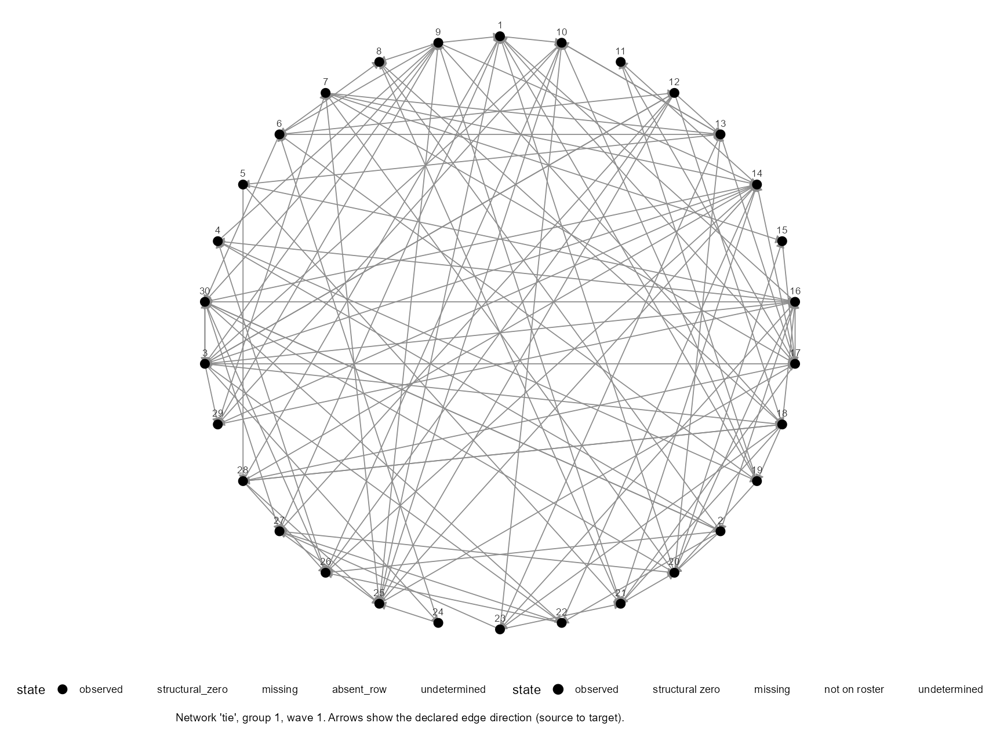
demo_influence at wave 1: 30 nodes, 118 directed ties.what = "coverage" asks a different question — what is actually observed, by variable and wave:
plot(demo_influence, what = "coverage")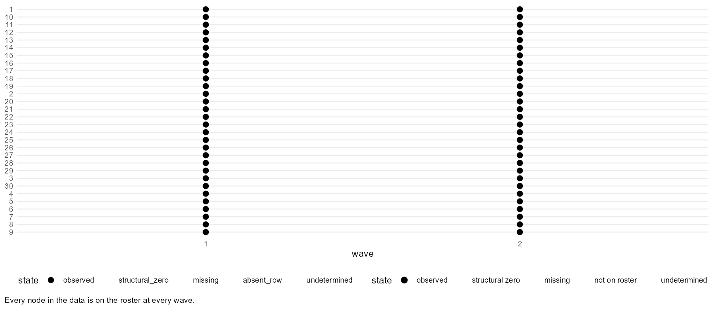
Every panel has a table behind it, and plot_data() returns that table so you can draw it yourself or put the numbers in a paper:
head(plot_data(demo_influence, what = "coverage"))node wave group unit present missing_state 1 1 1 1 1 TRUE observed 2 10 1 1 10 TRUE observed 3 11 1 1 11 TRUE observed 4 12 1 1 12 TRUE observed 5 13 1 1 13 TRUE observed 6 14 1 1 14 TRUE observed
The panels available
what = | Shows |
|---|---|
"network" (default) | The network itself, one snapshot. |
"coverage" | What is observed, by variable and wave. |
"missing" | Where the missing cells are. |
"exposure" | The distribution of a constructed exposure. |
"centrality" | The distribution of a centrality measure. |
Influence: the question
An Influence model asks whether a node's characteristic changes with its own prior state and with what the nodes around it were doing. The outcome is a node variable measured at two occasions; the predictor of interest is exposure, a summary of the alters' characteristic carried through the network.
The question is not “are connected people similar?” They usually are, and on its own it tells you very little. The question is whether a node's outcome shifts toward its alters' from one occasion to the next, once you have accounted for the node's own earlier value.
That last clause is the whole design. Two people who were already alike will look alike again at wave 2 whether or not anything passed between them. Putting the earlier outcome in the model is what turns the question from “are they similar?” into “did this one move?”
The path from here
- The data — the dataset the worked example uses, and what to look at before fitting anything.
- Exposure — what reaches a node through its ties, and the two ways of summarising it that answer different questions.
- Fit the model — the formula grammar, and how closely it parallels
lm()andlmer(). - Read the results — the coefficient, and a magnitude on the outcome's own scale.
- Homophily and the latent space — the confound that makes all of the above an association rather than an effect, and one published adjustment for it.
- Several networks — random intercepts, cluster-robust standard errors, and whether a group mean is reliable.
- Check the fit — the fit statistics, the residuals with respect to the network, and the assumption ledger.
- Beyond this path — what else the Influence side can do, and which parts are experimental.
The Influence dataset
The worked example uses demo_influence, which ships with the package. It is two data frames, exactly like the ones you built on Nodes, ties and waves — just bigger, and generated from a known process so that the code on these pages has something to run on.
demo_influence<netis_data>
30 nodes in 1 group, 118 ties, directed, 2 waves, self-ties prohibited
node variables: dynamic: y, x
tie variables: static: tie
tie network semantics:
tie: binary (inferred), row_presence (inferred)
no group_data suppliedThirty nodes in one network, observed twice, with an outcome y, a covariate x, and a directed relation tie that does not change between waves. The substantive story to keep in mind: y is something that could plausibly travel — an attitude, a practice, a level of engagement — and tie is the relation it could travel along.
Look before you fit
Two panels are worth a minute before any model. The network itself, which tells you whether the structure is anything like what you assumed:
plot(demo_influence, wave = 1)demo_influence at wave 1: 30 nodes, 118 directed ties.And coverage, which tells you what is actually observed before a fit silently drops the rest:
plot(demo_influence, what = "coverage")diagnose_data() on Check the data is the structured version of the same look, and is the one to run on your own data, where the answer will be less tidy than this.
One thing to notice now
Thirty nodes is a small network for this question, and it will matter when the interval on the exposure coefficient turns out wide. That is not a flaw in the example; it is the ordinary situation in a two-wave study of one team, and How precise is an exposure coefficient? comes back to it with simulations.
Exposure
Exposure is how much of a characteristic reaches a node through its ties. It is the predictor the whole path is about, and it is constructed rather than measured — so what it means is whatever you built. The default is the weighted sum of Friedkin & Johnsen (1990) and Marsden & Friedkin (1993):
The team from Nodes, ties and waves is small enough to check by hand. Four people advise Ada, with different strengths, and they differ in the characteristic being carried:
The sum weights each adviser's wellbeing by how strong that advice tie is:
compute_exposure(team, content = "wellbeing", via = "strength", wave = 1)group node ex_wellbeing_strength 1 1 Ada 170 2 1 Ben 120 3 1 Cyd 10 4 1 Dev 50 5 1 Eli 30 6 1 Fay 0
Cyd, with strength 3, contributes three times what Ben does at the same wellbeing — that is what a weighted conduit means. Fay gets 0: nothing reaches her, so nothing sums to anything.
Sum or average — a choice, not a default
Row normalization divides by the node's total tie weight (Leenders 2002), which turns the total inflow into the average of a node's advisers:
compute_exposure(team, content = "wellbeing", via = "strength",
normalize = "row", wave = 1)group node ex_wellbeing_strength 1 1 Ada 24.286 2 1 Ben 40.000 3 1 Cyd 10.000 4 1 Dev 50.000 5 1 Eli 30.000 6 1 Fay NA
Read the top row first: Ada's 170 has become 170 ⁄ 7 = 24.29, the average wellbeing of her advisers, weighted by advice strength. The other rows are the same arithmetic — and Fay's NA is the subject of the next section, not a mistake.
The two quantities answer different questions, and the difference is not cosmetic:
normalize = "none" (default) | normalize = "row" | |
|---|---|---|
| Quantity | Total inflow | Average alter |
| Rises with the number of ties | Yes | No |
| A node with twice as many alters | Has twice the exposure, other things equal | Has the same exposure, other things equal |
| Suits | A dose that accumulates | A norm the node is being pulled toward |
Pick the one your theory implies, and say which you used. A finding that holds for the total but not the average is a finding about accumulation, and it should be reported that way.
A node nobody advises
Fay has no incoming ties. There is no average of her advisers to take, because she has none — so rnetis makes it NA rather than quietly calling it zero:
compute_exposure(team, content = "wellbeing", via = "strength",
normalize = "row", wave = 1)group node ex_wellbeing_strength 1 1 Ada 24.286 2 1 Ben 40.000 3 1 Cyd 10.000 4 1 Dev 50.000 5 1 Eli 30.000 6 1 Fay NA
A zero would be a claim: that Fay's advisers average zero on the scale. On this scale wellbeing runs from 10 to 60, so zero would put her off the bottom of the observed range and make her the most extreme case in the dataset — purely because nobody advises her. An NA makes no claim at all, and the row drops out of the fit, which is the honest default.# "zero" says an isolate belongs at zero on the scale. Here wellbeing
# runs from 10 to 60, so zero is not a neutral value -- it is off the
# bottom of the observed range, and Fay would be the most extreme case
# in the dataset purely because nobody advises her.
compute_exposure(team, content = "wellbeing", via = "strength",
normalize = "row", isolate_rule = "zero", wave = 1)group node ex_wellbeing_strength 1 1 Ada 24.286 2 1 Ben 40.000 3 1 Cyd 10.000 4 1 Dev 50.000 5 1 Eli 30.000 6 1 Fay 0.000
There are situations where zero is genuinely right: when the characteristic is a dose and zero means none of it arrived, and the scale has a real zero. isolate_rule lets you say so — or stop instead:
compute_exposure(team, content = "wellbeing", via = "strength",
normalize = "row", isolate_rule = "error", wave = 1)Error: Row-normalization requested but 1 node(s) have no reference-set members (isolates), so their normalized exposure denominator is undefined: Fay. Set isolate_rule to "na" or "zero", or use normalize = "none".
What matters is incoming ties, not ties at all. A node with plenty of outgoing ties and none coming in has no exposure under the default reading, because nothing reaches it.
Reversing the reading
The default reads a stored tie as “source influences target”. Reversing it asks a different question of the same data: not what reaches Ada through the people who advise her, but what reaches her through the people she advises.
# The default reads a stored tie as "source influences target". Reversing
# it asks a different question of the same data: not what reaches Ada
# through the people who advise her, but what reaches her through the
# people she advises.
compute_exposure(team, content = "wellbeing", via = "strength",
direction = "target_influences_source", wave = 1)group node ex_wellbeing_strength 1 1 Ada 50 2 1 Ben 70 3 1 Cyd 160 4 1 Dev 140 5 1 Eli 50 6 1 Fay 0
This is the one place in the package that reverses a network, it is an argument you have to type, and the fit records that you typed it.
On the worked dataset
ex <- compute_exposure(demo_influence, content = "y", via = "tie",
normalize = "row", wave = 1)
head(ex)
summary(ex$ex_y_tie)group node ex_y_tie 1 1 1 0.376683 2 1 10 0.052736 3 1 11 0.256160 4 1 12 -0.373257 5 1 13 0.547435 6 1 14 0.482774 Min. 1st Qu. Median Mean 3rd Qu. Max. -1.4224 0.0858 0.3952 0.4063 0.6245 1.6714
Influence along longer paths
Exposure through a single step of the network is the common case and the one this tutorial uses. Influence that travels along longer paths, with each step discounted, is the balance-information mechanism of Frank & Fahrbach (1999): bi(delta, alpha, gamma), with bi_components() and bi_sweep() alongside it. See The rest of the package.
Fit the model
fit_influence() takes a formula and a data object, and if you have ever fitted a regression in R you already know most of the grammar.
fit <- fit_influence(
y ~ ar() + exposure(y, via = tie, normalize = "row"),
data = demo_influence
)
fit<netis_influence>
y ~ ar() + exposure(y, via = tie, normalize = "row")
Estimator: pooled ordinary least squares (the formula declares no random-effects term) [backend: stats]
Waves: analyzed 1 -> 2 of 2 present; 0 waves not used
30 rows in the estimating sample
Term Estimate SE 95% interval
1 (Intercept) 0.2697 0.1702 [-0.0795, 0.6188]
2 y_lag1 0.4923 0.1313 [0.2230, 0.7616]
3 ex_y_tie 0.0749 0.2220 [-0.3806, 0.5304]This is lm() and lmer(), with the network parts written down
The formula is deliberately the same shape as the ones you already write. What changes is that the two columns a network model needs — the lagged outcome and the exposure — are named in the formula instead of being built by hand in a script beforehand.
| Written with | The formula | Who builds the columns |
|---|---|---|
stats::lm() | y2 ~ y1 + x | You do, before fitting. |
lme4::lmer() | y2 ~ y1 + x + (1 | group) | You do, before fitting. |
rnetis::fit_influence() | y ~ ar() + x + (1 | group) | The formula does, from the data object. |
That is not an analogy — it is the same arithmetic. Build the lagged column and the exposure column yourself and hand them to lm():
# rnetis builds a design matrix and hands it to stats::lm. Doing the same
# thing by hand gives the same numbers -- which is the point: `ar()` and
# `exposure()` are shorthand for columns, not a different estimator.
ex <- compute_exposure(demo_influence, content = "y", via = "tie",
normalize = "row", wave = 1)
nd <- netis_nodes(demo_influence)
panel <- data.frame(
y_now = nd$y[nd$wave == 2],
y_prev = nd$y[nd$wave == 1],
ex = ex$ex_y_tie[match(nd$node[nd$wave == 2], ex$node)]
)
round(coef(lm(y_now ~ y_prev + ex, data = panel)), 6)(Intercept) y_prev ex 0.269675 0.492293 0.074937
…and then let the formula do it:
fit <- fit_influence(y ~ ar() + exposure(y, via = tie, normalize = "row"),
data = demo_influence)
round(coef(fit), 6)(Intercept) y_lag1 ex_y_tie 0.269675 0.492293 0.074937
The same three numbers, to six decimal places.ar()andexposure()are instructions for building columns, not a different estimator: with no random-effects term,fit_influence()callsstats::lm(). The gain is that the instructions travel with the fit, so what counted as exposure is recoverable from the result rather than remembered from a script.
Add (1 | group) and the estimator becomes lme4::lmer(), in the same way and for the same reason — see Several networks. The estimator line in the printed output always says which was used.
The terms you will actually use
Three things in that first fit are worth naming.
1ar() — the outcome's own prior value
With it in the model, the exposure coefficient is about change rather than level: it asks whether a node moved toward its alters, given where it started. Without it you are asking a much weaker question, and one that similarity alone will answer for you.
2exposure(y, via = tie) — what reached the node
The alters' prior outcome carried through the tie network, built exactly as on the previous page. Every argument that changed the quantity there can be given here, and is recorded on the fit.
3The estimator line — what was used, and why
No random-effects term in the formula means ordinary least squares, and the output says so rather than leaving you to infer it. It also reports the transition it analyzed, which is the other thing a reader needs.
Ordinary covariates
A bare covariate is read at the outcome wave, which is the usual default and also the usual mistake: a predictor measured at the same time as the outcome could be a consequence of it. lagged() reads an earlier wave instead, and is the more defensible choice whenever that is a live worry.
fit2 <- fit_influence(
y ~ ar() + exposure(y, via = tie, normalize = "row") + x + lagged(x),
data = demo_influence
)
netis_estimates(fit2)term group estimate std.error conf.low conf.high role scale 1 (Intercept) <NA> 0.22984 0.17427 -0.12908 0.58877 direct outcome units 2 y_lag1 <NA> 0.51055 0.13276 0.23712 0.78397 stability outcome units 3 x_lag1 <NA> 0.10034 0.16175 -0.23278 0.43347 lagged outcome units 4 ex_y_tie <NA> 0.19830 0.24295 -0.30206 0.69867 exposure outcome units 5 x <NA> 0.20043 0.19448 -0.20012 0.60097 direct outcome units
centrality() adds a node's structural standing in the network as a predictor — how central it is, computed from the network at the lag you name. Useful when you suspect that well-connected people differ in the outcome for reasons that have nothing to do with exposure:
fit3 <- fit_influence(
y ~ ar() + exposure(y, via = tie, normalize = "row") +
centrality(tie, "degree", mode = "in"),
data = demo_influence
)
netis_estimates(fit3)term group estimate std.error conf.low conf.high role scale 1 (Intercept) <NA> 0.051495 0.322027 -0.610441 0.71343 direct outcome units 2 y_lag1 <NA> 0.475394 0.133819 0.200326 0.75046 stability outcome units 3 ex_y_tie <NA> 0.060387 0.224233 -0.400530 0.52130 exposure outcome units 4 cent_degree_tie <NA> 0.058337 0.072911 -0.091533 0.20821 structural outcome units
Keep “structural standing” and “latent position” apart in your head. A centrality is an observed, interpretable property of the recorded network. A latent position, on page 5, is an estimated coordinate with no substantive scale at all. They look similar in a formula and mean entirely different things.
And the conduit itself can be a transformation of a tie variable rather than the raw one — see Derived networks:
fit_influence(
y ~ ar() + exposure(y, via = symmetrize(tie, "max"), normalize = "row"),
data = demo_influence
)<netis_influence>
y ~ ar() + exposure(y, via = symmetrize(tie, "max"), normalize = "row")
Estimator: pooled ordinary least squares (the formula declares no random-effects term) [backend: stats]
Waves: analyzed 1 -> 2 of 2 present; 0 waves not used
30 rows in the estimating sample
Term Estimate SE 95% interval
1 (Intercept) 0.2211 0.2271 [-0.2449, 0.6872]
2 y_lag1 0.5053 0.1303 [0.2379, 0.7728]
3 ex_y_sym_tie 0.1728 0.3876 [-0.6225, 0.9681]One transition at a time
A fit analyzes one transition between two waves. With three or more waves present, rnetis will not pick one for you:
three <- simulate_influence(n_nodes = 20, beta = 0.3, normalize = "row",
n_waves = 3, seed = 4)
fit_influence(y ~ ar() + exposure(y, via = tie, normalize = "row"),
data = three$data)Error: This data has 3 waves (1, 2, 3), and this version fits one transition at a time. rnetis will not choose which one for you: analysing a 3-wave study through a single transition is a decision about your design, and leaving it to a default is how it goes unnoticed. Name the transition, e.g. waves = c(2, 3).
Name the transition and it proceeds:
fit_influence(y ~ ar() + exposure(y, via = tie, normalize = "row"),
data = three$data, waves = c(2, 3))<netis_influence>
y ~ ar() + exposure(y, via = tie, normalize = "row")
Estimator: pooled ordinary least squares (the formula declares no random-effects term) [backend: stats]
Waves: analyzed 2 -> 3 of 3 present; 1 wave not used
20 rows in the estimating sample
Term Estimate SE 95% interval
1 (Intercept) -0.4095 0.3249 [-1.0949, 0.2760]
2 y_lag1 0.0867 0.4177 [-0.7945, 0.9679]
3 ex_y_tie -0.0497 0.5137 [-1.1334, 1.0341]Why one transition rather than the whole panel is a question about estimators, and it has the same answer on both paths. Path B, page 1 sets it out, and Scope lists what is deliberately absent.
The terms, in one table
| Term | What it adds |
|---|---|
ar(lag = 1) | The outcome's own prior value. |
exposure(content, via, ...) | Alters' characteristic through a network. |
lagged(var, lag = 1) | An earlier wave's value of a node variable. |
var | A node variable at the outcome wave. |
centrality(network, measure, ...) | A node's structural standing. |
network_stat(network, measure, ...) | A whole-network statistic. |
latent(network, d, ...) | Latent-space positions as covariates — page 5. |
(1 | group) | A random intercept per network. |
Formula terms at a glance has the full list with arguments, for both model families.
Read the results
summary() prints the coefficients together with what the fit is assuming to get them:
summary(fit)Influence model
Formula: y ~ ar() + exposure(y, via = tie, normalize = "row")
Estimator: pooled ordinary least squares (the formula declares no random-effects term)
Backend: stats 4.6.2
Waves: analyzed 1 -> 2 of 2 present; 0 waves not used
Estimand: single transition
Coefficients:
Term Estimate SE 95% interval
1 (Intercept) 0.2697 0.1702 [-0.0795, 0.6188]
2 y_lag1 0.4923 0.1313 [0.2230, 0.7616]
3 ex_y_tie 0.0749 0.2220 [-0.3806, 0.5304]
Assumptions:
Network: fixed timing (measured); exogeneity NOT DECLARED (rnetis assumes nothing about it).
[A4] the exposure coefficient -- assumed, not addressed [not testable]
[T2] the lagged-outcome coefficient -- persistence across ONE transition; not a stable autoregressive process [not testable]
[A1] all coefficients -- structural
[A2] all coefficients -- assumed, not addressed
[A3] the reported standard errors -- assumed, not addressed
[B] the lagged-outcome and exposure coefficients -- assumed, not addressed
[B2] the exposure coefficient -- assumed, not addressed
[C] the exposure coefficient -- assumed, not addressed
Full statements: netis_assumptions(fit).
As data: netis_estimates(), netis_glance(), netis_variance_components().
Computed on request: netis_dependence(), netis_assumptions(), pseudo_r2(), influence_effect().
Design and estimation findings recorded at fit time: none.Reading this particular result
The exposure coefficient is 0.07 with a 95% interval from −0.38 to 0.53. The interval includes zero and a good deal either side of it. What this fit supports is: on these 30 nodes, across this one transition, the data do not distinguish an exposure effect from no effect, and would not distinguish a fairly large one either. It is not evidence that influence is absent.
The lagged outcome, by contrast, is estimated away from zero: these nodes' outcomes persist. That is the ordinary pattern in a two-wave study of this size, and How precise is an exposure coefficient? shows what it takes to narrow the exposure interval.
A magnitude on the outcome's scale
A coefficient on exposure is not a magnitude anyone can read, because exposure is a constructed quantity on a scale nobody has intuitions about. influence_effect() converts it into a predicted change in the outcome across a stated range of exposure — by default the observed 10th to 90th percentile.
eff <- influence_effect(fit)
effInfluence effect sizes
Predicted change across the observed 10-to-90 percentile of each exposure, on the outcome's scale.
ex_y_tie (contrast -0.3766 to 1.19)
coef 0.0749 (95% CI [-0.3806, 0.5304]), predicted change 0.1174The interval covers uncertainty in the coefficient; the range itself is treated as fixed. Choose a different range and the magnitude moves with it, which is why the range is printed next to the number:
influence_effect(fit, probs = c(0.25, 0.75))$exposures[["ex_y_tie"]]$predicted_change[1] 0.040368
This is the number to put in a paper, with its range named. A reader can judge whether a change of that size over that range of exposure matters; they cannot judge a probit-scale or constructed-predictor coefficient at all.
The coefficient table as data
For a manuscript table you want the estimates as an ordinary data frame rather than printed text:
netis_estimates(fit)term group estimate std.error conf.low conf.high role scale 1 (Intercept) <NA> 0.269675 0.17015 -0.079452 0.61880 direct outcome units 2 y_lag1 <NA> 0.492293 0.13126 0.222974 0.76161 stability outcome units 3 ex_y_tie <NA> 0.074937 0.22200 -0.380569 0.53044 exposure outcome units
Note the role and scale columns. Every estimate says what kind of term it is and what units it is in, so a table assembled from this cannot silently mix a raw coefficient with a standardized one.
Pictures
plot(fit)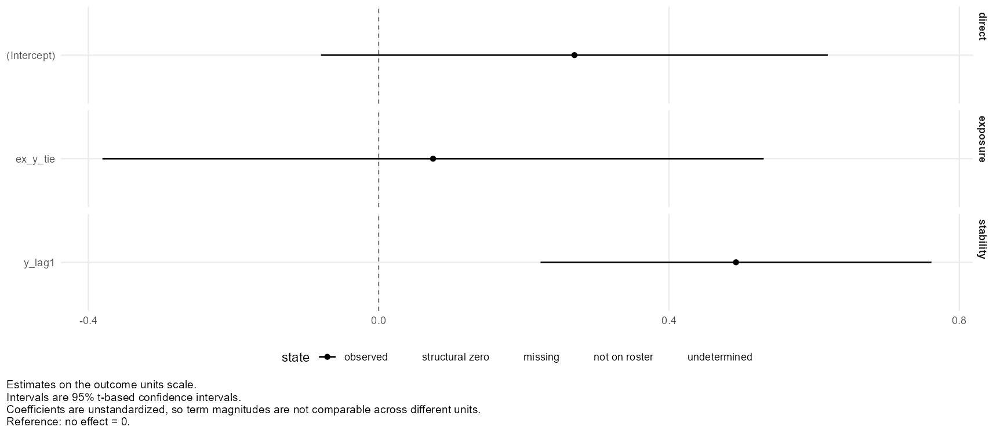
plot(fit, what = "effects")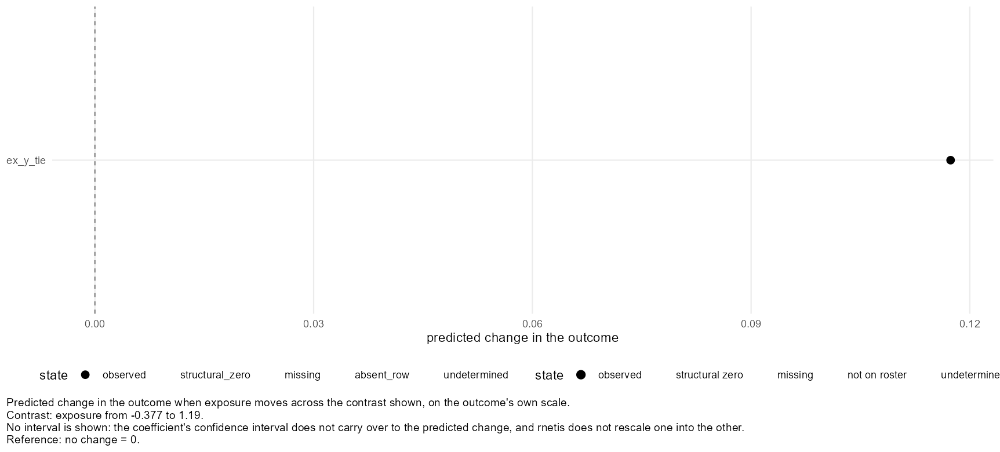
influence_effect().The effect object's own fields
influence_effect() returns a structured object, not a sentence, so the coefficient, the contrast range it used and the predicted change are each available by name:
eff$exposures[["ex_y_tie"]][c("coefficient", "contrast_low", "contrast_high",
"predicted_change")]$coefficient [1] 0.074937 $contrast_low [1] -0.3766 $contrast_high [1] 1.1896 $predicted_change [1] 0.11736
The other one-row summaries
netis_glance() gives one row per fit, with the fit statistics in it, and is what Check the fit uses. netis_estimand() states in words what the fit is an estimate of — which transition, which estimator, and under what propagation.
netis_glance(fit) family estimand estimator backend nobs n_groups n_transitions r.squared
1 influence single transition pooled stats 30 NA 1 0.35561
sigma rmse n_error n_warning n_note netis_version
1 0.77867 0.73871 0 0 0 0.1.0netis_estimand(fit)$family [1] "influence" $estimand [1] "single transition" $description [1] "A single transition, 1 -> 2." $transitions $transitions[[1]] [1] 1 2 $outcome_waves [1] "2" $estimator [1] "pooled" $estimator_reason [1] "the formula declares no random-effects term"
Two pages follow, and the order matters. The next one is about the confound that decides whether any of this is an effect at all; after that come several networks; and only then Check the fit, so that it can report on every fit built by then rather than just this one.
Homophily and the latent space
Everything up to here produced an association. This page is about why it is not yet an effect, and about the one adjustment rnetis implements for it.
If an unobserved trait makes people both choose similar friends and behave a certain way, an influence coefficient absorbs part of that trait. Shalizi and Thomas (2011) show that influence and homophily are generically confounded this way in observational network studies. This is not a small correction to worry about later; it is the central identification problem of the design.
Nothing in the previous pages distinguishes those two diagrams. The residual diagnostics do not, the fit statistics do not, and a narrower confidence interval would not either — a precisely estimated coefficient on the right-hand diagram is a precisely estimated confound.
The idea of the adjustment
Xu's (2018, 2021) observation is that if the trait drives who befriends whom, then the network itself carries information about the trait. Fit a model of tie formation in which each actor has a position, and actors with similar positions are likelier to be tied; those estimated positions are then a proxy for the trait, and can go into the behavioural model as ordinary covariates.
The first stage is the latent-space model of Hoff, Raftery & Handcock (2002). In Xu's (2021) formulation, the log-odds that a tie exists falls with the distance between the two actors' positions:
The positions taken forward are the Minimum Kullback-Leibler positions of Shortreed, Handcock & Hoff (2006) — fit$mkl$Z in Xu's own code. They enter the influence model as actor-level covariates, so the second stage is the same model as before with extra columns:
Credit where it is due
The procedure is Xu's, from Xu (2018) and the worked account in Xu (2021). Xu did not publish a package for it: the article sets out the two stages and the code to run them. The first stage is fitted bylatentnet(Krivitsky & Handcock 2008), which is the package Xu's own code uses and the one rnetis calls — install it, and cite it, if you uselatent(). What rnetis adds is that the two stages are one formula term instead of a script, and that the resulting fit records what the first stage conditioned on.
Doing it
The first stage is a Markov chain, so this takes appreciably longer than anything else in Path A:
lat <- fit_influence(
y ~ ar() + exposure(y, via = tie, normalize = "row") +
latent(tie, d = 1, homophily = c("y", "x"),
control = list(sample.size = 5000, burnin = 20000, interval = 10)),
data = demo_influence
)
summary(lat)Influence model
Formula: y ~ ar() + exposure(y, via = tie, normalize = "row") + latent(tie, d = 1, homophily = c("y", "x"), control = list(sample.size = 5000, burnin = 20000, interval = 10))
Estimator: pooled ordinary least squares (the formula declares no random-effects term)
Backend: stats 4.6.2
Waves: analyzed 1 -> 2 of 2 present; 0 waves not used
Estimand: single transition
Latent-space adjustment lat_tie_1 (Xu 2018, 2021): network ~ euclidean(d = 1) + absdiff("y") + absdiff("x"), at wave 1 (stage-one seed 1391940700).
Positions are ESTIMATED, and their scale and location are arbitrary: a
position coefficient is not the effect of the unobserved trait. The
adjustment is plug-in -- the selection model's uncertainty does not enter
these standard errors.
Coefficients:
Term Estimate SE 95% interval
1 (Intercept) 0.2406 0.1811 [-0.1317, 0.6129]
2 y_lag1 0.5112 0.1378 [0.2279, 0.7945]
3 ex_y_tie 0.1317 0.2495 [-0.3812, 0.6447]
4 lat_tie_1 -0.1348 0.2561 [-0.6611, 0.3915]
Assumptions:
Network: fixed timing (measured); exogeneity NOT DECLARED (rnetis assumes nothing about it).
[A4] the exposure coefficient -- assumed, not addressed [not testable]
[T2] the lagged-outcome coefficient -- persistence across ONE transition; not a stable autoregressive process [not testable]
[A1] all coefficients -- structural
[A2] all coefficients -- assumed, not addressed
[A3] the reported standard errors -- assumed, not addressed
[B] the lagged-outcome and exposure coefficients -- assumed, not addressed
[B2] the exposure coefficient -- assumed, not addressed
[C] the exposure coefficient -- assumed, not addressed
Full statements: netis_assumptions(fit).
As data: netis_estimates(), netis_glance(), netis_variance_components().
Computed on request: netis_dependence(), netis_assumptions(), pseudo_r2(), influence_effect().
Design and estimation findings recorded at fit time: none.homophily conditions the first stage on observed similarity through absdiff() terms, so this gives latentnet::ergmm() the right-hand side euclidean(d = 1) + absdiff("y") + absdiff("x"). terms adds anything else — transitivity, ego and alter effects. Neither has a default, because what belongs in the selection model is a question about your design, not a setting.
This is the argument to think hardest about. For the positions to stand in for the unobserved trait, the first stage has to account for the selection mechanisms you can observe. Leave an observed homophily out and the positions will absorb it, and then you have controlled for something you could have measured.
Side by side with the unadjusted fit:
rbind(unadjusted = netis_estimates(fit_influence(
y ~ ar() + exposure(y, via = tie, normalize = "row"),
data = demo_influence))[3, c("estimate", "conf.low", "conf.high")],
adjusted = netis_estimates(lat)[3, c("estimate", "conf.low", "conf.high")])estimate conf.low conf.high unadjusted 0.074937 -0.38057 0.53044 adjusted 0.131719 -0.38123 0.64467
On this dataset the two are close, and both intervals comfortably include zero — so the adjustment changes no conclusion here. That is a fact about demo_influence, not a general result: the adjustment moves an estimate when the network carries information about the trait, and how much it moves is not something you can predict before fitting it.
Four limits, each of which matters
1It addresses a trait present in both processes
Xu (2021, p. 60) states that the adjustment does not improve the estimate when the trait is present in only one process. If the trait affects behaviour but not tie formation, or the reverse, the network carries no information about it. A fit will still produce numbers.
2Positions are treated as known
They enter as ordinary covariates. rnetis does not propagate first-stage uncertainty into the second stage, and neither does Xu's procedure. It does not jointly estimate the two stages, and it does not correct for generated regressors.
3A position has no substantive scale
A latent space is identified only up to rotation, reflection and translation. Actors close in position should be close in the trait, but a position coefficient is not the effect of the trait and should not be reported as one.
4With several networks, the form is experimental
Xu's procedure is defined for one network. The multi-group form is this package's own extension of it, has no published validation, and has not been validated for statistical performance — so fit_influence() warns whenever it fits one. See Beyond this path.
Several networks
Most designs have more than one network: several teams, classrooms, clinics. demo_influence_groups has 42 nodes across four separate ones. Fitting them together without saying so would pool four networks into a single intercept, so it is refused:
fit_influence(y ~ ar() + exposure(x, via = tie), data = demo_influence_groups)Error: This netis_data object has 4 groups, but the formula has no random-effects term, so the fit would pool rows from unrelated networks into one intercept. Two ways forward: add (1 | group) to the formula, which fits one mixed-effects model across the networks and is usually what is wanted; or subset to a single group's rows and reconstruct a single-group netis_data(), which fits that network on its own by ordinary least squares.
A random intercept per network says what you meant, and switches the estimator from lm() to lme4::lmer() — the same substitution you would make by hand:
mg <- fit_influence(
y ~ ar() + exposure(x, via = tie) + (1 | group),
data = demo_influence_groups
)
mg<netis_influence>
y ~ ar() + exposure(x, via = tie) + (1 | group)
Estimator: mixed-effects (lme4) (the formula declares a random-effects term) [backend: lme4]
Waves: analyzed 1 -> 2 of 2 present; 0 waves not used
42 rows in the estimating sample
Term Estimate SE 95% interval
1 (Intercept) 0.3500 0.3298 [-0.2964, 0.9963]
2 y_lag1 0.3987 0.1286 [0.1466, 0.6508]
3 ex_x_tie 0.0349 0.0909 [-0.1433, 0.2131]The variance components say how much of the outcome's variation sits between networks rather than within them, which is worth knowing before you interpret anything else:
netis_variance_components(mg)grouping term kind estimate variance sd residual_variance_share 1 group (Intercept) variance 0.38355 0.38355 0.61931 0.51196 2 Residual (residual) variance 0.36563 0.36563 0.60467 0.48804
A predictor measured on a higher-order unit is informed by the number of those units. Four networks is four, however many nodes they contain.
plot(mg, what = "heterogeneity")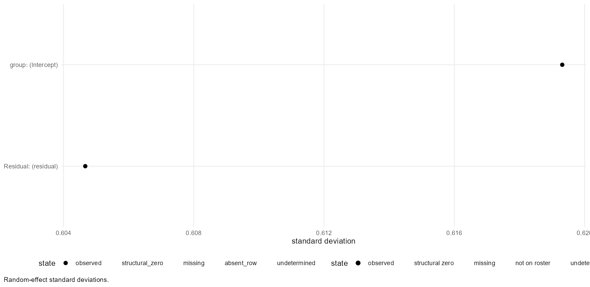
Cluster-robust standard errors
A random intercept is one assumption about the dependence within a network. Clustered standard errors are a different one: they allow arbitrary dependence inside each network and assume independence between them. influence_se_comparison() sets the two side by side (Liang & Zeger 1986; Bell & McCaffrey 2002). It is a comparison, not a replacement:
influence_se_comparison(mg, by = "group")term se_model se_robust ratio pct_change df_satterthwaite 1 (Intercept) 0.329783 0.34665 1.05116 5.1157 2.9740 2 y_lag1 0.128634 0.10044 0.78080 -21.9200 2.8328 3 ex_x_tie 0.090917 0.07212 0.79325 -20.6751 2.1766
Where the two disagree, that is information: it says the model's variance assumption is doing work. And the function states what it does and does not address rather than leaving you to assume:
attr(influence_se_comparison(mg, by = "group"), "addresses")[1] "arbitrary residual dependence within each network, assuming independence between networks"
by = "group" needs several networks, because independence between them is the thing it assumes, so it is refused on one:
influence_se_comparison(fit, by = "group")Error: vcov = "cluster" with by = "group" needs more than one group to cluster on, and this fit has one. A clustered sandwich estimates its outer variance from variation ACROSS clusters, so a single cluster supplies one term and no estimate. No variance estimator in rnetis models residual dependence inside a SINGLE network, so rnetis reports that it cannot compute this rather than returning a number from a different model. Do NOT substitute by = "node": clustering on actors assumes actors are independent clusters, which is precisely what residual network dependence violates, so it answers a different question rather than a weaker version of this one.
by = "node" clusters on the actor instead. It is a different correction, is never network-robust, and is refused on a mixed fit. The addresses attribute says so in each case.
Is a group mean worth modelling?
Where a construct is aggregated to the group — a team's average climate, say — ask whether the group mean is reliable before you model it, or you are modelling noise. icc1() is the one-way ANOVA ICC(1) of Bliese (2000) on the rows the fit used; icc2() is the reliability of the group mean.
icc1(mg)
icc2(mg)ICC(1): 0.5967 [one-way ANOVA, unconditional]
grouping: group (4 groups, 42 observations, n0 = 10.27)
Share of outcome variance associated with group membership BEFORE
conditioning on this model's predictors. Not the same quantity as
netis_variance_components()'s conditional share.
ICC(2): group-mean reliability for 'group' [one-way ANOVA]
group n_j reliability
a 12 0.94668
b 9 0.93015
c 14 0.95395
d 7 0.91195
Overall: 0.9383 (evaluated at n0 n = 10.270)Rater agreement, and an eta-squared that is positive under no effect
For agreement among raters on a scale, rwg() and rwg_j() implement James, Demaree & Wolf (1984). rwg() takes one item, rwg_j() a matrix of them. The null distribution decides the answer, so it has no default:
set.seed(1)
ratings <- matrix(stats::rnorm(60, 4, 0.4), ncol = 3)
teams <- rep(c("a", "b"), each = 10)
rwg(ratings[, 1], teams, null = list(dist = "uniform", n_options = 5))Within-group agreement r_wg [1 item(s)]
null variance: 2 (negative values truncated at 0)
group n observed_var rwg
a 10 0.09749 0.95125
b 10 0.18302 0.90849
Agreement WITHIN groups. Not reliability of differentiation BETWEEN
them -- see icc1()/icc2(); the two can point different ways.rwg_j(ratings, teams, null = list(dist = "uniform", n_options = 5))Within-group agreement r_wg(j) [3 item(s)]
null variance: 2 (negative values truncated at 0)
group n observed_var variance_ratio rwg
a 10 0.10013 0.050065 0.98274
b 10 0.15076 0.075382 0.97354
Agreement WITHIN groups. Not reliability of differentiation BETWEEN
them -- see icc1()/icc2(); the two can point different ways.With at least five networks, netis_dependence() also reports residual_eta_squared, the between-group sum of squares of the residuals over the total. It is above zero in expectation with no group effect whatsoever — (J - 1) / (N - 1) for J groups and N rows, and larger when groups are small (Bliese & Halverson 1998). Compare it against that, never against zero.
Check the fit
This page comes last in the path on purpose: by now there are several fits to compare — the plain one, the latent-adjusted one, the multi-group one — and most of what follows is only useful comparatively.
The fit statistics
netis_glance() returns one row per fit, and the fit statistics are in it:
# One row per fit, with the fit statistics in it
as.data.frame(netis_glance(fit)) family estimand estimator backend nobs n_groups n_transitions r.squared
1 influence single transition pooled stats 30 NA 1 0.35561
sigma rmse n_error n_warning n_note netis_version
1 0.77867 0.73871 0 0 0 0.1.0| Field | What it is |
|---|---|
r.squared | Proportion of the outcome's variance the model accounts for. A genuine R-squared here, because the estimator is least squares. |
sigma | The residual standard deviation, on the outcome's own scale. |
rmse | Root mean squared error on the fitted rows — in-sample, so it is a description of this fit, not a prediction error. |
nobs | Rows the fit actually used. Compare it with the rows you expected: the difference is what was dropped. |
estimator, backend | What was used. pooled with backend stats is lm(). |
A Gaussian Influence fit is a likelihood model, so the information criteria are defined and reported:
logLik(fit)
AIC(fit)
BIC(fit)'log Lik.' -33.483 (df=4) [1] 74.966 [1] 80.57
Comparing models
An information criterion is only meaningful between models fitted to the same rows. These two are, so the comparison is admissible:
# Information criteria compare models fitted to THE SAME rows. These two
# are, so the comparison is admissible.
plain <- fit_influence(y ~ ar(), data = demo_influence)
withx <- fit_influence(y ~ ar() + exposure(y, via = tie, normalize = "row"),
data = demo_influence)
data.frame(
model = c("ar() only", "ar() + exposure()"),
nobs = c(netis_glance(plain)$nobs, netis_glance(withx)$nobs),
r2 = round(c(netis_glance(plain)$r.squared, netis_glance(withx)$r.squared), 4),
rmse = round(c(netis_glance(plain)$rmse, netis_glance(withx)$rmse), 4),
AIC = round(c(AIC(plain), AIC(withx)), 2),
BIC = round(c(BIC(plain), BIC(withx)), 2)
)model nobs r2 rmse AIC BIC 1 ar() only 30 0.3529 0.7403 73.09 77.30 2 ar() + exposure() 30 0.3556 0.7387 74.97 80.57
Adding exposure raised AIC by about 1.9 and BIC by about 3.3, and moved R-squared by 0.003. Both criteria prefer the model without it. That agrees with the coefficient interval from page 4 and it is the honest summary of this dataset: nothing here supports an exposure effect. It is not evidence that there is none — see How precise is an exposure coefficient?.
Two traps. A latent-adjusted fit drops any row whose actor has no estimated position, so its nobs can differ and an AIC comparison against the unadjusted fit is then invalid — check nobs first. And a mixed fit's criteria come from lme4, are on a different likelihood, and are never comparable with an lm() fit's.
pseudo_r2() is the one to read the help page for before you quote it. On an OLS fit it reports the ordinary R-squared under its own name; on a mixed or probit fit the same function reports several quantities that answer different questions, and none of them is “the” R-squared:
pseudo_r2(fit)Pseudo R-squared (influence model) ------------------------------------------------------------ R-squared (ordinary least squares) 0.356 Adjusted R-squared 0.308 This is an ordinary R-squared, not a pseudo-R-squared: an OLS fit has a genuine proportion-of-variance-explained and it is reported under its own name. It is the same r.squared netis_glance() reports. Different measures answer different questions; none is 'the' R-squared.
Residual dependence with respect to the network
The question a fit statistic cannot answer: are the residuals still patterned along the network? netis_dependence() needs the data as well as the fit, because it rebuilds the network from it:
netis_dependence(fit, demo_influence)Residual dependence structure:
Within-unit serial correlation: not applicable (one outcome row per unit).
Residual network autocorrelation ('ex_y_tie', source_influences_target, normalize = "row"): median I = -0.030 over 1 snapshot(s). On a directed operator this is not confined to [-1, 1].
Reported as a described quantity: rnetis ships no reference distribution for a directed operator, so there is no p-value to read here.
Residual eta-squared on group: undefined -- there is one group, so there is no between-group sum of squares. Undefined is not zero.
<netis_diagnostics: 0 ERROR, 0 WARNING, 2 NOTE>
[NOTE/dependence] This influence specification conditions on the observed network. The fit does not establish whether the network can be treated as exogenous; that depends on the network's formation and design process, which this specification does not model. An experimentally assigned or physically determined structure may well be exogenous -- the fit simply has no way to tell, so it reports what it did rather than what is true of the world.
[NOTE/dependence] A lagged exposure to the outcome introduces a distinct potential endogeneity route -- separate from the temporal one, and present whether or not ar() is in the formula -- unless network assignment or formation can be treated as exogenous, or is modeled. Note also that this is regressor coupling, not disturbance dependence: one node's observed outcome is literally an input to another node's exposure, so the rows are linked through the predictors even under conditionally independent errors. A cluster-robust standard error addresses some of the second kind and none of the first.Read the second sentence of the Moran-type line carefully. The statistic is reported without a reference distribution, because the usual analytical moments are not derived for a directed W. There is no p-value to read, and the quantity is not confined to [−1, 1]. It is a described quantity, to be compared across specifications rather than against a threshold:
plot(netis_dependence(fit, demo_influence))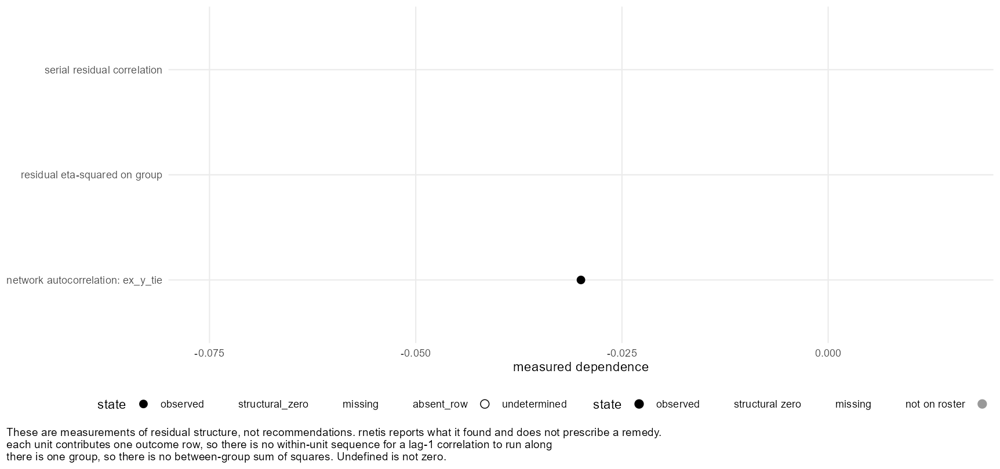
The assumption ledger
netis_assumptions() lists what a fit takes for granted, with its source and whether anything in the fit addresses it. It is the package's own construction rather than a published checklist, and it is long — the point of it is that nothing on the list is invisible.
netis_assumptions(fit)Assumptions carrying this fit:
Network: timing fixed (measured from the resolved conduit); exogeneity NOT DECLARED (rnetis assumes nothing about it).
[A1] The conditional mean is linear in the specified terms and the lag structure is deep enough that no omitted earlier state still predicts the outcome.
(source: maintained; handling: not applicable; bears on all coefficients)
[A2] Sequential exogeneity: the current innovation is mean-independent of the outcome, exposure and covariate history -- E[e_t | F_{t-1}] = 0. This is an assumption about the innovations; no estimator manufactures it.
(source: maintained; handling: unaddressed; bears on all coefficients)
[A3] The innovations are independent across actors given the model -- no common group-wave shock, no residual network dependence beyond what the exposure term already models.
(source: maintained; handling: unaddressed; bears on the reported standard errors)
[A4] No unmodeled time-varying process is related both to network position or exposure and to the outcome. This is a design question, not a testable one.
(source: maintained; handling: unaddressed; evidence: not testable; bears on the exposure coefficient)
no statistic computed from a fit can distinguish an omitted time-varying confounder from a genuine effect
[B] No actor effect is estimated, so persistent actor heterogeneity sits in the error term and is assumed unrelated to the regressors.
(source: maintained; handling: unaddressed; bears on the lagged-outcome and exposure coefficients)
[B2] Conditional on the terms in the fitted model -- the lagged outcome where ar() is in the formula, and the covariates -- the persistent actor heterogeneity left in the error term is uncorrelated with network exposure. No estimator in this package models or removes that heterogeneity, so the exposure coefficient rests on this assumption.
(source: default; handling: unaddressed; bears on the exposure coefficient)
[C] The network does not change across the estimating waves. How the network came about has not been declared, so rnetis assumes nothing about it and reports the exposure coefficient as resting on an undeclared condition. Declare it if you can defend one.
(source: default; handling: unaddressed; bears on the exposure coefficient)
[T2] With two waves the lagged-outcome term adjusts for the baseline outcome and estimates persistence across the single observed transition. It should not be read as establishing a stable autoregressive process over time: across one transition, persistence and the initial-condition relation with persistent actor heterogeneity are not separately identified, so the coefficient is a composite of both. The exposure coefficient does not inherit this -- it is identified by cross-sectional variation in exposure among actors at the same baseline -- but it does rest on B2.
(source: maintained; handling: not applicable; evidence: not testable; bears on the lagged-outcome coefficient)
one transition supplies no repeated within-actor information with which to separate persistence from stable heterogeneityMost rows read unaddressed. That is a statement about the design, not about your study: the dynamic-panel estimators that would address sequential exogeneity and persistent actor heterogeneity need more than the one transition a fit analyzes, so none of the package's estimators has a device for them. See Scope.
Two rows are yours to declare. A declaration changes what the fit reports; it does not change a single estimate:
declared <- fit_influence(
y ~ ar() + exposure(y, via = tie, normalize = "row"),
data = demo_influence,
network_exogeneity = "exogenous",
exposure_orthogonal_to_actor_effect = TRUE
)
netis_assumptions(declared)$network$exogeneity
all.equal(coef(fit), coef(declared))[1] "exogenous" [1] TRUE
all.equal(coef(fit), coef(declared)) is TRUE. Declaring the network exogenous does not make it so and moves no number; it records that the claim is yours, so a reader knows who made it.
What none of this establishes
No surface here tells you the model is right, or that an association is influence. Homophilous selection on an unobserved trait produces the same pattern — that is page 5 — and no statistic on this page distinguishes them. Together these tools tell you how much variation the model accounts for, whether adding a term improved the fit on the same rows, whether the residuals are still patterned along the network, what a different variance assumption does to the standard errors, and what the fit assumed. The step from “no adverse evidence” to “the assumption holds” is yours.
Beyond Path A
The path you have just finished is the supported route: build the data, construct exposure deliberately, fit one transition, report a magnitude on the outcome's scale, adjust for latent homophily, and check what the fit assumed. This page is the rest of the Influence side — what it can also do, and where the ground is less firm.
Marked experimental
1Multi-group latent() — experimental, and it warnsexperimental
Xu's procedure is defined for one network. rnetis will fit it across several, and warns every time, because this form is the package's own extension with no published validation.
per_group <- fit_influence(
y ~ ar() + exposure(x, via = tie) + latent(tie, d = 1, homophily = "x") +
(1 | group),
data = demo_influence_groups
)
netis_estimates(per_group)Warning message:
Backing off: too few acceptances. If you see this message several times in a row, use a longer burnin.
Warning message:
Multi-group latent() is experimental: it is this package's own extension of a single-network procedure and is not validated for statistical performance. The exposure coefficient is shared across networks. Compare against separate per-network fits. See ?latent.
term group estimate std.error conf.low conf.high role scale
1 (Intercept) <NA> 0.349622 0.33022 -0.29760 0.99684 direct outcome units
2 y_lag1 <NA> 0.402342 0.14142 0.12516 0.67953 stability outcome units
3 ex_x_tie <NA> 0.039643 0.10057 -0.15747 0.23675 exposure outcome units
4 lat_tie_1__a <NA> -0.169916 0.24830 -0.65657 0.31674 direct outcome units
5 lat_tie_1__b <NA> 0.011266 0.32636 -0.62838 0.65092 direct outcome units
6 lat_tie_1__c <NA> 0.067163 0.19220 -0.30954 0.44386 direct outcome units
7 lat_tie_1__d <NA> 0.015488 0.38093 -0.73113 0.76211 direct outcome unitsEach group is fitted separately in the first stage, its positions centred on the group's mean, entering as that group's own columns and zero elsewhere. One model across networks still imposes one shared exposure coefficient, one residual variance, the same d and the same stage-one specification, and position coefficients that are per group and not comparable across groups.
Separate per-network fits are the recommended primary analysis, with a multi-group fit as something to compare against them — not the other way round.
2The latent-scale variance sharepackage's own
pseudo_r2() on a probit or mixed fit reports quantities that are the package's own constructions, and they say so in their own output. Read ?pseudo_r2 before any of them goes in a manuscript.
Also available, and ordinary
| You want | Use | Where |
|---|---|---|
| Influence along longer, discounted paths | bi(), bi_components(), bi_sweep() | Frank & Fahrbach (1999); ?bi |
| A whole-network statistic as a predictor | network_stat() | Formula terms |
| A transformed conduit — binarized, symmetrized, multiplex | binarize(), symmetrize(), multiplex() | Derived networks |
| Centred, or within/between split, predictors | add_centering(), add_decomposition() | Derived variables |
| A network-autocorrelation (SAR) estimator | fit_influence(estimator = "sar") | needs sna and numDeriv |
| Data generated from a known influence process | simulate_influence() | Precision |
The rest of the package is the full appendix, for both paths.
Where Path A ends
You can now build a data object from your own data frames, construct exposure as the quantity you actually mean, fit a two-wave influence model, report a magnitude on the outcome's scale, apply one published adjustment for the confound that threatens it, handle several networks, and read the fit statistics against a comparison that is admissible. What you cannot do, from this design, is call the result an effect of influence without an argument that comes from outside the fit.
Path B models the other side of the same coin: not how behaviour follows ties, but how ties follow attributes.
Selection: the question
A Selection model turns the Influence question around. There, the network was given and the outcome was a person's characteristic. Here the tie itself is the outcome, and the predictors are properties of the sender, the receiver, the pair, and the relation's own history.
Path A asked: does what my alters do change what I do? Path B asks: does who we are explain who is tied to whom? They are the two halves of the same confound — which is why Path A's latent-space page had to fit a selection model before it could trust an influence coefficient.
The outcome is binary: for every ordered pair, a tie or no tie. So everything on these pages is about predicting a 0/1 relation, and the quantities that matter are probabilities.
The path from here
- The data — what a dyadic dataset looks like, how to build a pair attribute, and why a fit models one transition.
- Specify a model — the model's equation, the role grammar, and why a bare covariate is an error.
- Run the model — the Markov chain, the settings worth changing, and how to tell whether it worked.
- Effect sizes — turning a probit coefficient into a probability contrast anyone can read, and choosing which one.
- Several groups — fitting each network separately and combining, and what pooling assumes away.
- One hierarchical model — random intercepts and slopes across groups, in one chain.
- Beyond this path — what else the Selection side can do, and which parts are experimental.
The Selection dataset
A Selection model reads the same netis_data as an Influence model — nodes, ties, waves — but it uses it differently, so it is worth looking at the shape before fitting anything. The vocabulary from Nodes, ties and waves is the vocabulary here: source and target, sender and receiver, mutual and asymmetric, and the difference between a zero and an absent row.
Two data frames, as always
demo_selection is nothing special. Two tables: twenty colleagues with a tenure score, and a tie relation observed twice.
# demo_selection is two plain data frames, like any other netis_data.
# The node table is static -- tenure does not change -- so it has no
# wave column at all.
head(netis_nodes(demo_selection), 3)
head(netis_ties(demo_selection), 4)group node tenure 1 1 p01 -0.4011698 2 1 p02 0.0052744 3 1 p03 -0.2393547 group source target wave tie 1 1 p02 p01 1 0 2 1 p02 p01 2 0 3 1 p03 p01 1 0 4 1 p03 p01 2 0
The node table has no wave column, because tenure does not change. The tie table does, because the relation does.
The shape that matters
An Influence dataset has one row per person per wave. A dyadic dataset has one row per ordered pair per wave, and that is a much bigger table than people expect:
# 20 nodes make 380 ordered pairs, and both waves were observed, so the
# tie table has a row for every pair at every wave -- zeros included.
nrow(netis_nodes(demo_selection))
nrow(netis_ties(demo_selection))
table(netis_ties(demo_selection)$wave)
table(netis_ties(demo_selection)$tie)[1] 20 [1] 760 1 2 380 380 0 1 615 145
Twenty people make 20 × 19 = 380 ordered pairs, and both waves were observed, so the tie table has 760 rows. Of the 380 pairs at a wave, most are zeros. That is normal: networks are sparse, and the zeros are the majority of the data a selection model learns from.
Which is exactly why the declaration from the earlier page matters here more than anywhere. These zeros are measured: every pair was asked about and most answered no. A dataset where the absent pairs were simply never collected is a different dataset, and would give different coefficients from the same fit call.
Building a pair attribute
sender() and receiver() read node variables, which you already have. dyad() reads a tie variable: one value per ordered pair, a property of the pair rather than of either person. Those you usually have to construct. Here, whether the two colleagues are in the same unit of the organisation:
# A pair attribute is a TIE variable: one value per ordered pair, not a
# property of either person on their own. Here, whether the two are in
# the same unit of the organisation.
nodes <- netis_nodes(demo_selection)
ties <- netis_ties(demo_selection)
unit <- rep(c("u1", "u2"), length.out = nrow(nodes))
names(unit) <- nodes$node
ties$same_unit <- as.numeric(unit[ties$source] == unit[ties$target])
head(ties[, c("source", "target", "wave", "tie", "same_unit")], 4)source target wave tie same_unit 1 p02 p01 1 0 0 2 p02 p01 2 0 0 3 p03 p01 1 0 1 4 p03 p01 2 0 1
Then rebuild the object with the new column declared alongside the relation:
staff <- netis_data(
node_data = nodes,
tie_data = ties,
wave_col = "wave",
tie_meta = list(
tie = list(zero_meaning = "measured_zero"),
same_unit = list(zero_meaning = "measured_zero"))
)
staff<netis_data>
20 nodes in 1 group, 380 ties, directed, 2 waves, self-ties prohibited
node variables: static: tenure
tie variables: static: same_unit; dynamic: tie
tie network semantics:
tie: binary (inferred), complete_dyadic (inferred)
same_unit: binary (inferred), complete_dyadic (inferred)
no group_data suppliedzero_meaning = "measured_zero" on both. For tie it says a zero is an observed non-tie; for same_unit it says that two people in different units really are coded 0, rather than that the pair was never classified.
Moving data in and out
Nothing about this shape locks you in. The object came from two data frames and gives them back; it converts to and from igraph and statnet a wave at a time. What it will not do is convert silently when the conversion needs a decision from you:
# An igraph graph has edges, so exporting one means deciding which rows
# of a complete-dyadic table are edges. The declaration we made says a
# zero is a measured absence; it does not yet say a zero is not an edge.
as_igraph(staff, "tie", wave = 2)Warning message: This conversion would lose records a single-network snapshot has no place for: a group table, declared metric time, declarations on the other tie variables. Not carried: the declarations on tie variable(s) 'same_unit'. Consequence: none for the exported network's values; the records are simply absent from the graph, and from anything rebuilt from it. read them off the netis_data object before converting if you need them, and re-declare them when rebuilding. To proceed anyway, pass allow_loss = "schema_records". Error: Edge presence for 'tie' is undetermined: this network is declared presence_mode = "complete_dyadic" (rows exist regardless of tie status), but no presence_col or presence_rule was supplied to say which rows are actually present. Say which in netis_data(). If a nonzero value means a tie, pass: tie_meta = list(tie = list(presence_mode = "value_rule", presence_rule = function(value) value != 0)) If a column of your tie table says so, pass: tie_meta = list(tie = list(presence_mode = "indicator", presence_col = "<column>")) If every row is a tie, whatever its value, pass: tie_meta = list(tie = list(presence_mode = "row_presence"))
An igraph graph has edges, so exporting one means saying which rows of a complete-dyadic table are edges. Say it, and the round trip works:
# Say it, and the round trip works. This is the same declaration the
# fits on the following pages rely on.
staff <- netis_data(
node_data = nodes,
tie_data = ties,
wave_col = "wave",
tie_meta = list(
tie = list(zero_meaning = "measured_zero",
presence_mode = "value_rule",
presence_rule = function(value) value != 0),
same_unit = list(zero_meaning = "measured_zero"))
)
g <- as_igraph(staff, "tie", wave = 2)
g
netis_data_from_igraph(g)Warning message:
This conversion would lose records a single-network snapshot has no place for: a group table, declared metric time, declarations on the other tie variables. Not carried: the declarations on tie variable(s) 'same_unit'. Consequence: none for the exported network's values; the records are simply absent from the graph, and from anything rebuilt from it. read them off the netis_data object before converting if you need them, and re-declare them when rebuilding. To proceed anyway, pass allow_loss = "schema_records".
Warning message:
This conversion would lose a presence_rule closure, which has no stable serialized form. Network 'tie' resolves presence with a rule function. Consequence: the target representation carries the resolved presence but not the rule that produced it, so a round trip re-infers rather than restores it. re-declare presence_rule on import, or use presence_col, whose column name does survive. To proceed anyway, pass allow_loss = "presence_metadata".
IGRAPH 81b34bd DNW- 20 89 --
+ attr: netis_meta (g/x), name (v/c), tenure (v/n), same_unit (e/n), tie
| (e/n), weight (e/n)
+ edges from 81b34bd (vertex names):
[1] p04->p01 p07->p01 p14->p01 p04->p02 p07->p02 p09->p02 p13->p02 p14->p02 p18->p02
[10] p02->p03 p07->p03 p09->p03 p14->p03 p03->p04 p07->p04 p09->p04 p14->p04 p16->p04
[19] p20->p04 p01->p05 p07->p05 p14->p05 p16->p05 p04->p06 p13->p06 p14->p06 p15->p06
[28] p20->p06 p02->p07 p03->p07 p04->p07 p09->p07 p10->p07 p13->p07 p14->p07 p20->p07
[37] p06->p08 p12->p08 p01->p09 p13->p09 p14->p09 p20->p09 p04->p10 p07->p10 p09->p10
[46] p14->p10 p16->p10 p07->p11 p12->p11 p13->p11 p14->p11 p06->p12 p07->p12 p20->p12
[55] p03->p13 p04->p13 p05->p13 p07->p13 p09->p13 p10->p13 p14->p13 p18->p13 p20->p13
+ ... omitted several edges
<netis_data>
20 nodes in 1 group, 89 ties, directed, 1 waves, self-ties prohibited
node variables: static: tenure
tie variables: static: same_unit, tie
tie network semantics:
same_unit: binary (inferred), row_presence (inferred)
tie: binary (inferred), row_presence (inferred)
no group_data suppliedRead the warnings rather than skipping them: they name exactly what the graph cannot carry — the other tie variable's declarations, and the presence rule itself, which has no serialized form. A round trip through igraph re-infers what it cannot restore. Importing and exporting has the full list of converters.
Why a fit models one transition
Two waves of a relation give one transition, and that is what a Selection model fits. With three or more waves present, rnetis will not choose which:
# Three occasions of the same relation. A fit models one transition, and
# will not pick which.
three <- netis_data(
nodes,
rbind(ties, transform(ties[ties$wave == 2, ], wave = 3)),
wave_col = "wave",
tie_meta = list(tie = list(zero_meaning = "measured_zero"),
same_unit = list(zero_meaning = "measured_zero")))
fit_selection(tie ~ sender(tenure) + prior_tie(), data = three,
nscan = 500, burn = 100, odens = 10, seed = 1)Error: This data has 3 waves (1, 2, 3), and this version fits one transition. rnetis will not choose which one: a fit reported without naming its transition reads as though the whole panel were modeled. Name it -- waves = c(2, 3) for the last transition, or any other observed pair. In the named pair, `to` is the outcome and a lag of 1 reads `from`.
prior_tie() uses the earlier network as an initial condition and the later one as the outcome. A third wave offers a second transition, and stacking it on the first is a different estimation problem rather than more of the same data.This is a scope decision with a reason, and the reason is worth knowing before you wish it away.
1Dynamic-panel bias
A lagged outcome on the right-hand side leaves you two choices, and neither is free. Leave persistent actor heterogeneity in the error, and the lagged term is correlated with it. Sweep the heterogeneity out with a within transformation, and the lagged term picks up the bias Nickell (1981) describes — of order 1/T, so worst in exactly the short panels network studies have.
The estimators built to resolve this — Arellano–Bond, Blundell–Bond and their successors — need more transitions than a two-wave design supplies. rnetis does not implement them, which is why the assumption ledger reads unaddressed for persistent actor heterogeneity.
2The initial-conditions problem
In a dynamic model of a binary outcome, the first observed state is not a neutral starting point: it was generated by the same process, and treating it as fixed biases the persistence parameter (Heckman 1981). prior_tie() conditions on wave 1 and so takes exactly that assumption — which is defensible for one transition and gets steadily less so as you stack more.
So rnetis fits one transition and makes you name it, rather than stacking several and returning a number that looks like a panel estimate. A wrong number is worse than a narrow one.
Naming the transition is how you proceed. It is still a model, though, and the data still has to support it — here waves 2 and 3 were built as copies of each other, and a lagged relation identical to the response is not a predictor:
# Naming the transition is how you proceed -- but here waves 2 and 3 were
# built as copies of each other, and a lagged relation identical to the
# response is not a predictor.
fit_selection(tie ~ sender(tenure) + prior_tie(), data = three,
waves = c(2, 3), nscan = 500, burn = 100, odens = 10, seed = 1)Error: Tie variable 'tie' in group '1' is identical at waves '2' and '3', so a lagged relation term between them would be the response itself. Choose a transition over which the relation changes, or drop the lagged term.
Wave depth is not restricted the way wave count is: lagged attributes and exposure histories may reach as far back as the data goes. It is the outcome that is one occasion per fit. Scope is the full statement.
Specify a model
fit_selection() fits an additive and multiplicative effects model (Hoff 2005, 2021) through amen::ame(). Before the grammar, the model — because the grammar is a direct transcription of it, and every argument on the next pages is an argument about one of these terms.
The model
For each ordered pair, a latent propensity is built, and a tie exists if the propensity crosses zero:
The two parts of the name are doing different jobs, and it is worth being clear which you are relying on:
1The additive part — aᵢ and bⱼ
Every actor gets a sender effect and a receiver effect. Without them, a person who nominates everybody makes every covariate they score highly on look important, and a person nobody nominates drags every covariate they score highly on down. These are not nuisance parameters to be tolerated — they are the reason a dyadic model is not just a logistic regression on pairs.
They also carry the within-dyad residual correlation, which is what reciprocity in the residuals means here, as distinct from prior_reciprocity() as a predictor.
2The multiplicative part — uᵢ′vⱼ
Optional, and off by default (R = 0). It adds latent factors that capture third-order structure additive terms cannot: clustering, and the “my friends' friends are my friends” pattern. Each dimension costs chain time, so turn it on when you have a reason.
This is a Bayesian model fitted by MCMC, not a regression. Everything on the following pages is a posterior summary, the chain has to be looked at, and a fit takes seconds to minutes rather than milliseconds.
Every predictor names its role
A variable attached to a person can enter as a property of the sender, of the receiver, or both — and these are different hypotheses about the same variable. So rnetis will not choose:
fit_selection(tie ~ tenure, data = demo_selection)Error: Selection formulas give every predictor an explicit role, so a bare term is not interpretable: tenure. Wrap each one in sender(), receiver(), or dyad() -- for example sender(tenure) for a property of the tie's sender, or sender(tenure) + receiver(tenure) to allow both.
| Term | Asks |
|---|---|
sender(tenure) | Does a longer-tenured actor send more ties? |
receiver(tenure) | Does a longer-tenured actor receive more? |
dyad(same_unit) | Is a property of the pair associated with a tie? Held as a tie variable — built on the previous page. |
prior_tie() | Did the relation exist at the previous wave? |
prior_reciprocity() | Did the reverse relation exist at the previous wave? |
group(size) | A group-level predictor. Only meaningful in a hierarchical model. |
Putting both sender(x) and receiver(x) in is normal and often right: it asks whether the attribute matters for sending, for receiving, or both, and lets the data answer separately.
Lagging an attribute as well
sender(), receiver() and dyad() all take lag. The default is lag = 0, the outcome wave, which is fitted and recorded with a design warning you will see on the next page. lag = 1 reads the previous wave instead, and is the more defensible predictor whenever the attribute could plausibly be a consequence of the tie.
Run the model
A note on the word. “Fit” here is a verb — running the chain. It is not the “fit” of fit statistics: a Selection model has no R-squared or AIC, and the last section of this page says why. Checking that the run worked is a question about the Markov chain, not about model fit.
One call, and the settings worth knowing
Everything the model needs is in one call. The chain settings are arguments rather than defaults to accept blindly, so they are written out here with what each one does:
# The chain settings, all in one place. These are the ones used on this
# page; none of them is a default to accept without looking.
sel <- fit_selection(
tie ~ sender(tenure) + receiver(tenure) + dyad(same_unit) + prior_tie(),
data = staff,
nscan = 5000, # draws kept after burn-in
burn = 1000, # draws discarded first
odens = 10, # thinning: keep one draw in ten
R = 0, # dimension of the multiplicative term
seed = 1
)
sel<netis_selection>
tie ~ sender(tenure) + receiver(tenure) + dyad(same_unit) + prior_tie()
Outcome family: binary tie (probit)
Groups: 1 (1)
Backend: amen::ame(), one observed network per group
Waves: analyzed 1 -> 2 of 2 present; 0 waves not used
Term Estimate SE 95% interval
1 intercept -1.5696 0.2216 [-2.0335, -1.1850]
2 snd_tenure 0.5220 0.1335 [0.2553, 0.7737]
3 rcv_tenure 0.4068 0.1186 [0.1898, 0.6481]
4 dyd_same_unit 0.1274 0.1891 [-0.2138, 0.5392]
5 prior_tie 1.7409 0.2479 [1.2705, 2.2354]| Argument | What it does | Where to start |
|---|---|---|
nscan | Draws kept after burn-in. The main lever on precision and on how long you wait. | 5,000 while exploring; more once the specification is settled. |
burn | Draws discarded first, before the chain has settled. | 1,000. |
odens | Thinning: keep one draw in odens. Reduces autocorrelation between stored draws and the memory they take. | 10. |
R | Dimension of the multiplicative term. 0 is additive effects only. | 0 until you have a reason. |
chains | Independent chains. Two or more are what makes R-hat mean anything, since it compares chains that started apart. | 1 while exploring; 2 or more to report. |
seed | Reproducibility. The same seed and settings give the same draws. | Always set it. |
waves | Which transition, when more than two waves are present. | Named explicitly, or rnetis refuses. |
These settings took about fifteen seconds on the machine this page was built on. Slow fits is the page for when that stops being true.
What the summary tells you
summary(sel) Formula: tie ~ sender(tenure) + receiver(tenure) + dyad(same_unit) + prior_tie()
Family: binary tie (probit)
Groups: 1
Backend: amen::ame(), one observed network per group
Waves: analyzed 1 -> 2 of 2 present; 0 waves not used
Coefficients are on the latent probit scale, not a probability or odds scale: exp(coefficient) is not an odds ratio for this model. Because they shift with the modeled sender, receiver, and dyadic heterogeneity, comparing them across specifications is not like comparing linear regression coefficients. Report probability-scale contrasts for magnitude.
Coefficients:
Term Estimate SE 95% interval
1 intercept -1.5696 0.2216 [-2.0335, -1.1850]
2 snd_tenure 0.5220 0.1335 [0.2553, 0.7737]
3 rcv_tenure 0.4068 0.1186 [0.1898, 0.6481]
4 dyd_same_unit 0.1274 0.1891 [-0.2138, 0.5392]
5 prior_tie 1.7409 0.2479 [1.2705, 2.2354]
Fit-time findings: 3 WARNING, 0 NOTE. List them with netis_diagnostics(fit).The summary says it itself, and it is worth taking literally: those numbers are not probabilities, not odds ratios, and not comparable across specifications. There is no mental arithmetic that turns a probit coefficient into a magnitude — the next page computes the quantity you actually want from it.
The transition the fit analyzed is in the header, and it is also a value rather than only printed text — worth asserting in a script rather than reading off a summary:
sel$waves$initial_waves
sel$waves$outcome_waves[1] 1 [1] 2
And the coefficient table as an ordinary data frame, which is what you want for a manuscript table — the same surface, with the same role and scale columns, as Path A, page 4:
netis_estimates(sel)term group estimate std.error conf.low conf.high role scale 1 intercept <NA> -1.56956 0.22156 -2.03353 -1.18503 intercept latent probit 2 snd_tenure <NA> 0.52203 0.13346 0.25529 0.77365 sender latent probit 3 rcv_tenure <NA> 0.40678 0.11863 0.18978 0.64807 receiver latent probit 4 dyd_same_unit <NA> 0.12744 0.18906 -0.21377 0.53922 dyadic latent probit 5 prior_tie <NA> 1.74094 0.24786 1.27049 2.23540 prior tie latent probit
A credible interval here is not a confidence interval. It is a range the posterior puts 95% of its mass in, given the model and the priors, and it is read directly: the parameter is probably in there. An interval that excludes zero is the Bayesian analogue of the finding you would report, not a hypothesis test.
Design findings, recorded at fit time
The summary ended with warnings. They are structured data rather than text, so they can be inspected and reported rather than just read:
netis_diagnostics(sel)[, c("family", "code", "level", "summary")] family code level
1 design contemporaneous_selection_covariate WARNING
2 design contemporaneous_selection_covariate WARNING
3 design contemporaneous_selection_covariate WARNING
summary
1 sender(tenure) is measured at the same wave as the tie outcome, not a prior one.
2 receiver(tenure) is measured at the same wave as the tie outcome, not a prior one.
3 dyad(same_unit) is measured at the same wave as the tie outcome, not a prior one.Each one carries a full statement of what it found and why it matters:
netis_diagnostics(sel)$detail[[1]][1] "sender(tenure) is measured at the same wave as the tie outcome, not a prior one. It is fit as an ordinary predictor, but this specification does not establish that tenure preceded the tie -- an attribute measured alongside a relation may be a consequence of it as easily as a cause. Consider sender(tenure, lag = 1) if the prior wave's value is a more defensible predictor."
tenure is static in this dataset, so lag = 1 would read the same values; the warning still fires, because the design claim is about measurement order, not about whether the numbers happen to differ.
Did the chain work?
A posterior summary means nothing if the chain did not explore the posterior. Two panels answer that, and they are the two to look at on every fit.
plot(sel, what = "trace")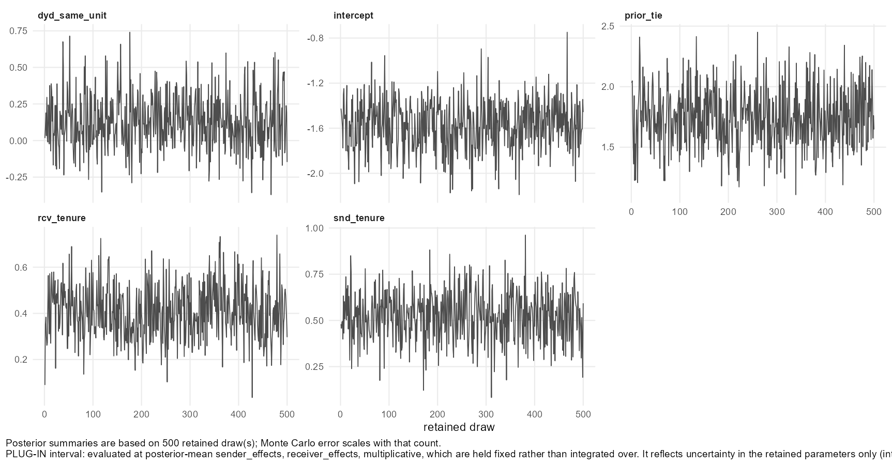
plot(sel, what = "mcmc")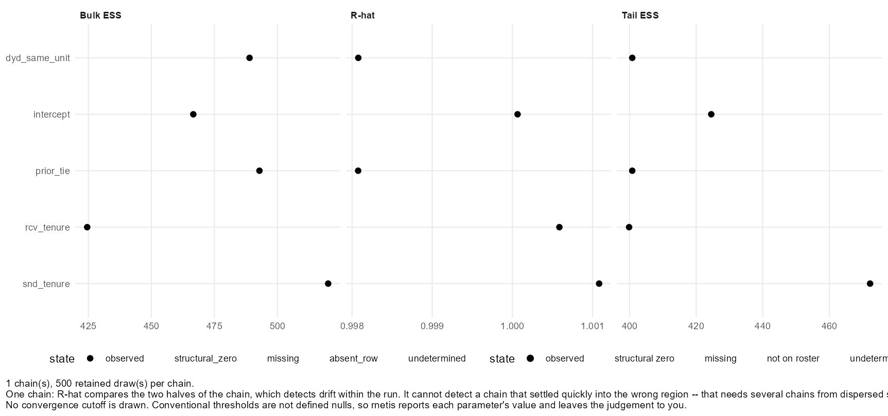
The other panels, and the tables behind them
plot(sel, what = "posterior")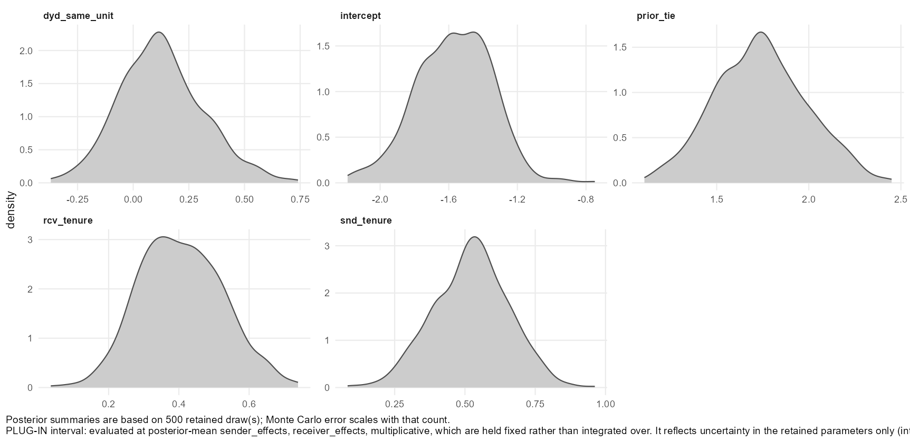
plot(sel)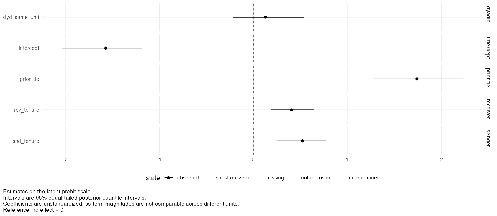
Every panel has its table behind it:
head(plot_data(sel, what = "trace"))term draw value missing_state 1 intercept 1 -1.4257 observed 2 intercept 2 -1.4664 observed 3 intercept 3 -1.5234 observed 4 intercept 4 -1.5910 observed 5 intercept 5 -1.7751 observed 6 intercept 6 -1.3012 observed
And the actor effects the additive part estimated:
plot(sel, what = "actor_effects")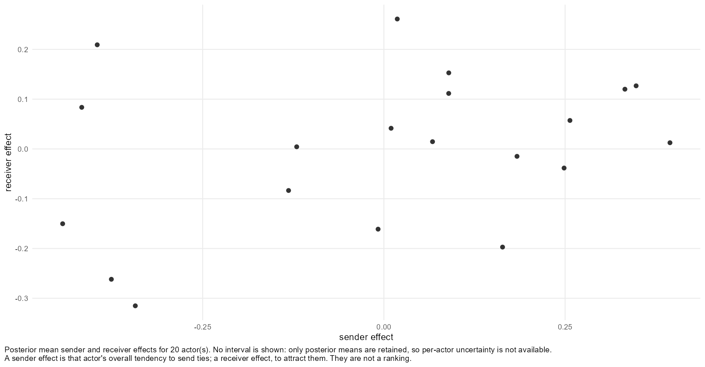
Where the variance sits
The actor effects are part of the model, so their variances are reported alongside the coefficients. This is the answer to “how much of this network is just that some people send more?”:
netis_variance_components(sel)grouping term kind estimate variance sd 1 1 sender variance variance 0.238569 0.23857 0.48843 2 1 sender-receiver covariance covariance 0.014698 NA NA 3 1 receiver variance variance 0.192343 0.19234 0.43857 4 1 within-dyad residual correlation correlation -0.109203 NA NA 5 1 dyadic residual variance variance 1.000000 1.00000 1.00000 residual_variance_share 1 0.16672 2 NA 3 0.13442 4 NA 5 0.69886
On a binary probit the dyadic residual variance is fixed at 1 for identification. The shares are relative to that, which is also why a latent-scale share here is not comparable with a linear model's R-squared.
No R-squared, no AIC, and why
Asking a Selection fit for a log-likelihood does not give you a worse answer. It gives you a refusal:
sel <- fit_selection(tie ~ sender(tenure) + receiver(tenure) +
dyad(same_unit) + prior_tie(),
data = staff, nscan = 5000, burn = 1000,
odens = 10, seed = 1)
logLik(sel)Error: A Selection fit has no log-likelihood: amen::ame() returns none, and reconstructing one from posterior draws would be a different quantity under the same name, so logLik(), AIC() and BIC() are not defined. For how much variation the predictors account for, use pseudo_r2().
What you get instead is a one-row summary of what was fitted, with the number of draws rather than an information criterion:
# What a Selection fit reports in place of an information criterion
as.data.frame(netis_glance(sel))family estimand outcome_family backend nobs n_groups pooled latent_dims 1 selection tie formation bin amen 380 1 FALSE 0 n_draws n_error n_warning n_note netis_version 1 500 0 3 0 0.1.0
This is the package's governing rule in one place: never return a result it cannot compute correctly. An AIC reconstructed from posterior draws would be a different quantity under a familiar name, and somebody would compare it with anlm()fit's. For how much variation the predictors account for,pseudo_r2()is on the next page, with its own caveats attached.
Reciprocity as a predictor
prior_reciprocity() asks whether the reverse relation existing at the previous wave predicts this one. That is a different question from the within-dyad residual correlation the additive part already estimates — the first is a hypothesis about history, the second is a property of the errors.
recip <- fit_selection(
tie ~ sender(tenure) + prior_tie() + prior_reciprocity(),
data = staff,
nscan = 5000, burn = 1000, odens = 10, seed = 1
)
netis_estimates(recip)term group estimate std.error conf.low conf.high role scale 1 intercept <NA> -1.38744 0.19391 -1.78181 -1.04450 intercept latent probit 2 snd_tenure <NA> 0.45641 0.14331 0.18054 0.73520 sender latent probit 3 prior_tie <NA> 1.76728 0.26087 1.26611 2.31217 prior tie latent probit 4 prior_recip <NA> 0.21404 0.27235 -0.27291 0.74427 reciprocity latent probit
Effect sizes
A probit coefficient is not a magnitude anyone can read. On the latent scale, 0.52 means “half a standard deviation of the latent propensity”, which answers no question a reader has. What they want to know is how much more likely a tie is — and that depends on where on the curve you are standing.
Why a probit coefficient will not do
Because the link is nonlinear, the same coefficient implies a large change in probability for a pair near the middle of the curve and almost none for a pair already near 0 or 1. There is no single “change in probability per unit of x”. So the quantity has to be stated as a contrast: the probability under one value of the predictor against the probability under another, with everything else held somewhere specific.
selection_effect() does exactly that. For a binary term, presence against absence:
selection_effect(sel, "prior_tie")Average marginal probability contrast Term: prior_tie (0 to 1 at every dyad) Estimand: conditional on the observed network Group: 1 Dyads: 380 +46.6 percentage points [31.7, 61.6] (95%) Actor effects are held at their posterior means rather than integrated over, because the fit keeps them only as posterior means. This interval reflects uncertainty in the coefficients only and is narrower than a fully propagated one.
Read it as: a pair that was tied at the previous wave has a predicted probability this much higher than an otherwise comparable pair that was not. That is a sentence that can go in a paper.
Read the closing line of the output too. The interval reflects uncertainty in the coefficients only, because the fit holds the actor effects at their posterior means. It is therefore narrower than a fully propagated interval — and it says so, rather than leaving you to discover it.
“Everything else held somewhere specific” — but where?
That phrase is where the real choice hides, and type is how you make it. The three options are genuinely different quantities, about different dyads, and they will not agree:
type = | The dyad it is about | Use it when | What the interval covers |
|---|---|---|---|
"conditional" (default) | Averaged over the dyads you observed, each actor's effect at its fitted value. | You are describing this network: these people, these ties. | Coefficients only. |
"population" | A randomly drawn dyad, integrated over the distribution of actor effects. | You are generalising to actors like these but not these ones. | Coefficients and the actor-effect variances — so it is wider. |
"reference" | A hypothetical pair with both actor effects at zero. | You want a clean, comparable benchmark rather than a description. | Coefficients only. |
A continuous term has no presence and absence, so the contrast moves each dyad from its observed value by delta — one unit by default, and worth setting to something substantively meaningful:
selection_effect(sel, "snd_tenure", delta = 1, type = "population")Average marginal probability contrast Term: snd_tenure (observed value + 1) Estimand: population-averaged over actor effects Group: 1 Dyads: 380 +10.1 percentage points [4.9, 15.0] (95%) Additive sender and receiver effects were integrated over their estimated distribution at each posterior draw (exactly, in closed form), so this interval reflects uncertainty in the coefficients and the additive actor-effect variances.
selection_effect(sel, "snd_tenure", delta = 1, type = "reference")Average marginal probability contrast Term: snd_tenure (observed value + 1) Estimand: reference dyad, actor effects at zero Group: 1 Dyads: 380 +10.3 percentage points [4.8, 15.8] (95%) Actor effects are set to zero, so this is a hypothetical pair with exactly average sender and receiver tendencies, not an average over actual dyads.
The three numbers differ, and none of them is “the” effect. Which one belongs in your paper depends on whether you are describing these actors or a population they stand for. Pick on that basis, before you see the numbers, and say which you reported.
Explained variation, with its caveats
There is no AIC here, and no R-squared in the ordinary sense — the previous page says why. What pseudo_r2() gives you is three different quantities that each answer a narrower question:
pseudo_r2(sel)Pseudo R-squared (selection model, group 1) ------------------------------------------------------------ Latent-scale variance share (fixed effects) 0.471 [0.344, 0.578] Tjur's D (probability scale) 0.462 Null-comparison pseudo R2 (latent scale) 0.267 The latent-scale variance share is this package's own construction, not a published statistic. The null comparison on a binary probit: the residual variance is fixed at 1 for identification, so predictors cannot reduce it and the reduction can appear only in the additive components. It therefore understates explained variation relative to a linear-scale analogue, and is not comparable with a linear-model R-squared. Different measures answer different questions; none is 'the' R-squared.
Two of those are this package's own constructions, and say so in their own output. The third is Tjur's D, which is published and has a plain reading: the mean fitted probability for pairs that were tied, minus the mean for pairs that were not. The note about the probit's fixed residual variance is the reason a latent-scale share is not comparable with a linear model's R-squared. ?pseudo_r2 is worth reading before any of it goes in a manuscript.The honest order of reporting for this model family: the coefficient with its credible interval, a probability contrast with its named estimand, the variance components, and the convergence diagnostics. An explained-variation number is a supplement to that, not a substitute for any of it.
Several groups
Most designs have more than one network, and on this path that raises a question Path A did not have to face: an AME model is fitted to one network at a time, because the actor effects and the latent factors are defined within a network. So “several groups” means deciding what to do with several separate fits.
rnetis offers three answers, and they are a ladder:
| Approach | What it does | What it assumes | Call it with |
|---|---|---|---|
| Pooled | Fits each group, then combines each coefficient by inverse-variance weighting (Cochran 1954; Hedges & Olkin 1985). | That the coefficient means the same thing in every group. | the default |
| Separate | Fits each group and leaves the estimates apart. | Nothing across groups — and gives you nothing across groups either. | pool_beta = FALSE |
| Hierarchical | One model over every group in a single chain, with between-group variation estimated. | A distribution the group coefficients are drawn from. | pooling = |
Pooling, and what it assumes away
two_groups <- netis_data(
node_data = rbind(transform(netis_nodes(demo_selection), group = "a"),
transform(netis_nodes(demo_selection), group = "b")),
tie_data = rbind(transform(netis_ties(demo_selection), group = "a"),
transform(netis_ties(demo_selection), group = "b")),
group_data = data.frame(group = c("a", "b"), size = c(8, 30)),
wave_col = "wave",
tie_meta = list(tie = list(zero_meaning = "measured_zero"))
)
two_groups<netis_data>
40 nodes in 2 groups, 760 ties, directed, 2 waves, self-ties prohibited
node variables: static: tenure
tie variables: dynamic: tie
tie network semantics:
tie: binary (inferred), complete_dyadic (inferred)
group variables: static: sizepooled <- fit_selection(tie ~ sender(tenure) + prior_tie(), data = two_groups,
nscan = 5000, burn = 1000, odens = 10, seed = 1)
pooled<netis_selection>
tie ~ sender(tenure) + prior_tie()
Outcome family: binary tie (probit)
Groups: 2 (a, b)
Backend: amen::ame(), one observed network per group
Waves: analyzed 1 -> 2 of 2 present; 0 waves not used
Coefficients pooled across 2 groups by two-stage common-beta precision weighting.
This assumes beta is COMMON across groups: there is no between-group variance
component, so heterogeneity in beta is assumed away rather than estimated.
Pooling is coefficient-wise, so no covariance between coefficients survives
it -- per-coefficient intervals are valid, joint tests are not.
Term Estimate SE 95% interval
1 intercept -1.3604 0.1411 [-1.6369, -1.0839]
2 snd_tenure 0.4586 0.1037 [0.2554, 0.6618]
3 prior_tie 1.7881 0.1822 [1.4311, 2.1452]The pooled coefficient is a weighted average, with each group contributing in proportion to its precision. An effect size follows from it in the ordinary way:
selection_effect(pooled, "prior_tie", group = "a")Average marginal probability contrast Term: prior_tie (0 to 1 at every dyad) Estimand: conditional on the observed network Group: a Dyads: 380 +50.6 percentage points [35.2, 66.2] (95%) Actor effects are held at their posterior means rather than integrated over, because the fit keeps them only as posterior means. This interval reflects uncertainty in the coefficients only and is narrower than a fully propagated one. The coefficient draws are this group's own, from before pooling: a pooled fit has a pooled mean and variance per coefficient but no pooled draws, so this contrast can differ from the pooled coefficient, even in sign.
Pooling assumes a coefficient means the same thing in every group. Between-group differences are assumed away, not estimated: there is no parameter in a pooled fit that could tell you whether the groups differ, so a pooled result cannot reassure you that they do not. If whether groups differ is anywhere near your question, this is the wrong tool.
The structural consequence is that pooling happens one coefficient at a time. There is no joint covariance across coefficients to take a contrast from, so asking for one is an error rather than a number:
vcov(pooled)Error: This fit pooled its coefficients across groups, and the pooling runs one coefficient at a time: each group contributes its posterior mean and its marginal variance, and no covariance between coefficients survives that. There is therefore no covariance matrix to return, and building one from the pooled variances would assert zero covariances that were never estimated. Per-coefficient standard errors are in summary(); for anything needing a joint covariance -- a contrast, a multi-coefficient Wald test, a joint credible region -- use a single group's fit, which has one.
Leaving the groups apart
pool_beta = FALSE does not combine them at all. coef() then returns one row per group, which is what you want when the groups are the finding:
separate <- fit_selection(tie ~ sender(tenure) + prior_tie(), data = two_groups,
pool_beta = FALSE,
nscan = 5000, burn = 1000, odens = 10, seed = 1)
coef(separate)intercept snd_tenure prior_tie a -1.3646 0.46158 1.7869 b -1.3562 0.45578 1.7895
plot(separate, what = "groups")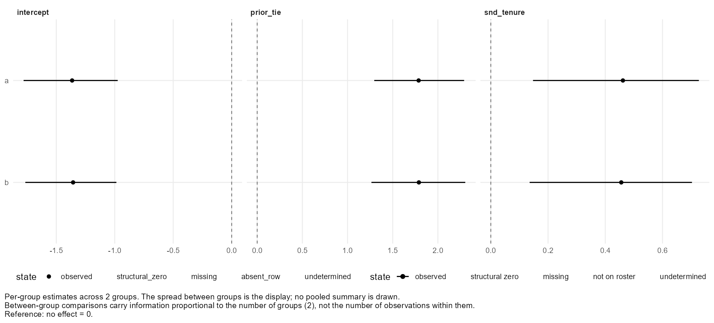
A group-level predictor is refused here
Within any single group, a group-level variable is constant — so it is collinear with that group's intercept, and separate per-group fits have nothing to estimate it from:
fit_selection(tie ~ group(size) + prior_tie(), data = two_groups)Error: This Selection specification cannot be estimated as written: - group(size) cannot be identified as a term: each group's fit reads one outcome wave, where 'size' takes one value for the whole group, so within any one group it is perfectly collinear with that group's intercept. The variable does differ between the 2 groups, but that variation is between fits rather than inside any one of them. pool_beta does not rescue it: it combines coefficients AFTER each group is fitted. To estimate a group-level predictor across groups, drop the group() term and supply it as a moderator of a random intercept: pooling = selection_pooling(random = "intercept", moderators = <one row per group>).
Group-level predictors belong in the hierarchical model, where they enter as moderators of the random coefficients. That is the next page, and it is also the answer to most of the limitations on this one.
Which rung to stand on. If the groups are a nuisance and you believe the coefficient is common: pool. If the groups are the finding: leave them apart and report them. If you want to know whether they differ, and by how much: the hierarchical model is the only one of the three that estimates it — and it is this package's own construction, so read the warning on that page before you rely on it.
One hierarchical model
This model is this package's own construction from published components: the AME model, hierarchical partial pooling, and half-t and LKJ priors. It is not a published method under a published name. ?hierarchical_selection specifies the model, the priors and the algorithm. Its tests establish that it computes what that page specifies; they do not establish its statistical performance. Treat results from it as you would results from a method you implemented yourself.pooling = selection_pooling() fits one model over every group in a single Markov chain. A coefficient you name in random gets a value for each group, drawn from a between-group distribution whose mean and spread are estimated; a group-level predictor enters as a moderator of those coefficients.
Twelve teams that genuinely differ
These twelve simulated teams differ in baseline and in sender slope, so there is something for the model to find:
set.seed(42)
teams <- sprintf("t%02d", 1:12)
team_nodes <- do.call(rbind, lapply(teams, function(g) {
data.frame(group = g, node = sprintf("%s_%d", g, 1:8),
wave = rep(1:2, each = 8),
extraversion = rep(stats::rnorm(8), 2))
}))
team_ties <- do.call(rbind, lapply(teams, function(g) {
ids <- sprintf("%s_%d", g, 1:8)
x <- team_nodes$extraversion[team_nodes$group == g & team_nodes$wave == 1]
p <- expand.grid(source = ids, target = ids, stringsAsFactors = FALSE)
p <- p[p$source != p$target, ]
eta <- stats::rnorm(1, -0.6, 0.4) +
stats::rnorm(1, 0.4, 0.25) * x[match(p$source, ids)]
do.call(rbind, lapply(1:2, function(w) {
data.frame(group = g, p, wave = w,
tie = stats::rbinom(nrow(p), 1, stats::pnorm(eta)))
}))
}))
teams_data <- netis_data(team_nodes, team_ties, wave_col = "wave",
tie_meta = list(tie = list(zero_meaning = "measured_zero")))
teams_data<netis_data>
96 nodes in 12 groups, 672 ties, directed, 2 waves, self-ties prohibited
node variables: static: extraversion
tie variables: dynamic: tie
tie network semantics:
tie: binary (inferred), complete_dyadic (inferred)
no group_data suppliedselection_pooling(random = c("intercept", "snd_extraversion"))<netis_selection_pooling> random: intercept, snd_extraversion unpooled: none everything else: shared across groups tau prior: half-t(nu = 3, A0 = 0.5) per derived reference change between-group covariance: diagonal (coefficients vary independently)
The fit
This is the longest-running block in the tutorial — two chains over twelve groups. It took about eight minutes on the machine this page was built on. Fit one group first if you are still deciding on a specification; see Slow fits.
hier <- fit_selection(
tie ~ sender(extraversion) + prior_tie(), data = teams_data,
pooling = selection_pooling(random = c("intercept", "snd_extraversion")),
nscan = 10000, burn = 1000, odens = 10, chains = 2, seed = 1
)
hier<netis_selection>
tie ~ sender(extraversion) + prior_tie()
Outcome family: binary tie (probit)
Groups: 12 (t01, t02, t03, t04, ...)
Backend: rnetis hierarchical sampler -- every group in one chain, using amen's conditional updates (see ?hierarchical_selection)
Waves: analyzed 1 -> 2 of 2 present; 0 waves not used
Shared across groups: prior_tie
Varying across groups (random), diagonal between-group covariance: intercept, snd_extraversion
Term Regime Estimate Posterior SD 95% interval
1 intercept random (mean) -0.9190 0.1204 [-1.1612, -0.6854]
2 snd_extraversion random (mean) 0.3724 0.0967 [0.191, 0.5654]
3 prior_tie shared 0.4477 0.1378 [0.1723, 0.7201]Reading it
netis_hierarchy() separates the three questions a hierarchical fit answers. population gives the mean mu and the between-group standard deviation tau of each random coefficient:
netis_hierarchy(hier)$populationcoefficient parameter estimate lower upper median rhat ess_bulk 1 intercept mu -0.91905 -1.1611716 -0.68543 -0.918424 1.0019 2029.18 2 intercept tau 0.14491 0.0043868 0.39502 0.120713 1.0041 283.01 3 snd_extraversion mu 0.37242 0.1910460 0.56539 0.370840 1.0000 1696.93 4 snd_extraversion tau 0.11116 0.0044188 0.33230 0.090286 1.0267 205.88 ess_tail 1 2003.30 2 165.78 3 1589.73 4 226.56
tau is the answer to “do groups differ on this?”, and it is estimated rather than assumed. That is the whole reason to come up this rung from pooling.
groups gives each team's own values:
head(netis_hierarchy(hier)$groups, 8)coefficient group beta_g lower upper within_sd informative tie_variation 1 intercept t01 -0.99660 -1.4733 -0.66072 1 TRUE TRUE 2 intercept t02 -0.98557 -1.4479 -0.65301 1 TRUE TRUE 3 intercept t03 -0.92386 -1.2828 -0.57417 1 TRUE TRUE 4 intercept t04 -0.92507 -1.2700 -0.60720 1 TRUE TRUE 5 intercept t05 -0.91286 -1.2665 -0.55847 1 TRUE TRUE 6 intercept t06 -0.99561 -1.5144 -0.65612 1 TRUE TRUE 7 intercept t07 -0.85066 -1.1697 -0.46760 1 TRUE TRUE 8 intercept t08 -0.92536 -1.3126 -0.58520 1 TRUE TRUE own_data_weight shrinkage rhat ess_bulk ess_tail 1 0.16610 0.83390 1.00324 1577.3 1487.0 2 0.20453 0.79547 1.00111 1454.2 1479.8 3 0.20040 0.79960 1.00251 1749.0 1602.9 4 0.26287 0.73713 1.00108 2070.6 1848.5 5 0.19549 0.80451 1.00096 1937.7 1717.6 6 0.17385 0.82615 1.00167 1426.4 1812.2 7 0.26797 0.73203 1.00212 1636.8 1475.9 8 0.16844 0.83156 0.99995 2091.2 1774.2
convergence gives R-hat and effective sample sizes for every parameter. These are the rows to read first — the shared coefficient, the population means, and the between-group standard deviations:
conv <- netis_hierarchy(hier)$convergence
# the rows you read first: the shared coefficient, the population means,
# and the between-group standard deviations
subset(conv, !family %in% c("group_coefficient", "nuisance"),
select = c(family, parameter, rhat, ess_bulk, ess_tail))family parameter rhat ess_bulk ess_tail 1 shared prior_tie 1.0013 1685.65 1847.16 2 population_mean mu:intercept 1.0019 2029.18 2003.30 3 population_mean mu:snd_extraversion 1.0000 1696.93 1589.73 4 between_group_sd tau:intercept 1.0041 283.01 165.78 5 between_group_sd tau:snd_extraversion 1.0267 205.88 226.56
The rest is one row per group coefficient and one per nuisance parameter — for twelve groups, seventy-odd more. Summarise rather than read them one by one:
# and the rest, summarised rather than printed: 12 groups make hundreds of rows
table(conv$family)
max(conv$rhat)
between_group_sd group_coefficient nuisance population_mean
2 24 48 2
shared
1
[1] 1.0267The tau rows have far smaller effective sample sizes than the mu rows. That is usual: a between-group standard deviation is estimated from twelve groups, and a variance parameter near zero mixes slowly. It is the parameter to watch when deciding whether to run the chain longer — and the one whose convergence a reader should be told about.
And what = "groups" draws the spread the model estimated:
plot(hier, what = "groups")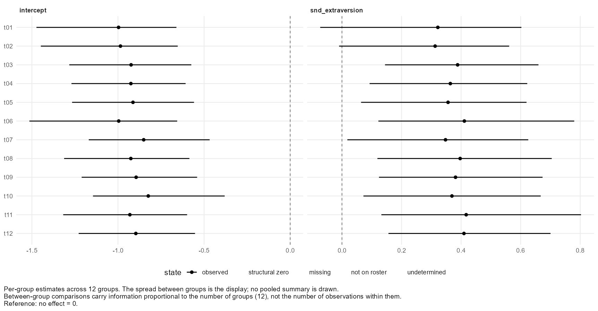
netis_variance_components() is not defined for a hierarchical fit — its shares are for per-group amen::ame() fits. Use netis_hierarchy() for the between-group distribution; each group's within-network quantities and their convergence diagnostics are in fit$convergence_table.
Beyond Path B
The path you have just finished is the supported route: build the dyadic data, specify roles explicitly, run the chain and check it, report a probability contrast with a named estimand, and handle several networks at whichever rung of the ladder your question needs. This page is the rest of the Selection side.
Marked experimental, or the package's own
1The hierarchical multi-group modelpackage's own
Everything on page 6. It is assembled from published components but is not itself a published method: the tests establish that it computes what ?hierarchical_selection specifies, and nothing about its statistical performance.
If between-group variation is central to your claim, report the per-group fits from page 5 alongside it, and say which you relied on.
2The latent-scale variance sharepackage's own
Two of the three quantities pseudo_r2() reports for a Selection fit are this package's own constructions, and say so in their output. Tjur's D is the published one.
Also available, and ordinary
| You want | Use | Where |
|---|---|---|
| Third-order structure the actor effects miss | R = 1, R = 2, … and plot(fit, what = "multiplicative") | below |
| Reciprocity of the previous wave as a predictor | prior_reciprocity() | Specify a model |
Correlated random effects, moderators, the prior on tau | selection_pooling(covariance = "unstructured", ...) | ?selection_pooling |
| A pair attribute built from a derived network | binarize(), symmetrize(), multiplex() | Derived networks |
| Everything else | — | The rest of the package |
The multiplicative part, in practice
R sets the dimension. R = 0, the default, is additive effects only; a positive R adds latent factors that capture structure the additive terms cannot:
ame2 <- fit_selection(
tie ~ sender(tenure) + receiver(tenure) + prior_tie(),
data = staff, R = 2,
nscan = 5000, burn = 1000, odens = 10, seed = 1
)
netis_estimates(ame2)term group estimate std.error conf.low conf.high role scale 1 intercept <NA> -1.75894 0.24579 -2.26993 -1.28341 intercept latent probit 2 snd_tenure <NA> 0.63553 0.17286 0.30650 0.97090 sender latent probit 3 rcv_tenure <NA> 0.47629 0.13871 0.20953 0.74995 receiver latent probit 4 prior_tie <NA> 2.05764 0.30530 1.44581 2.70201 prior tie latent probit
plot(ame2, what = "multiplicative")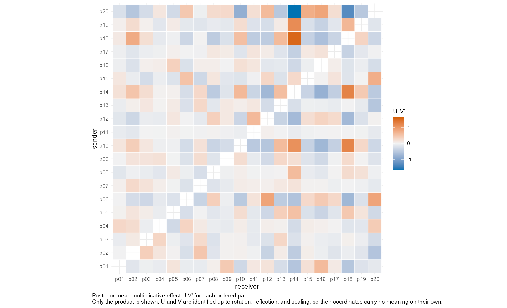
R = 2.A latent position here is identified only up to rotation, exactly as in Path A, page 5. The panel shows the rotation-invariant structure for that reason, and a coordinate from it is not an interpretable quantity.
Where Path B ends
You can now specify a tie model in which every predictor's role is explicit, run it with additive and multiplicative actor effects, check that the chain worked, report magnitudes as probability contrasts with a named estimand, handle several networks at three different levels of assumption, and fit one hierarchical model that estimates between-group variation instead of assuming it away — while knowing which of those surfaces are published methods and which are this package's own.
Formula terms at a glance
Both model families use a formula, and in both of them every term names its role. The two grammars do not overlap: an Influence term is not valid in a Selection formula and the reverse.
Influence terms
| Term | Arguments | What it adds |
|---|---|---|
ar() | lag = 1 | The outcome's own prior value. |
exposure() | content, via, name, x_lag = 1, w_lag, normalize, mechanism, direction, isolate_rule | Alters' characteristic carried through a network. |
lagged() | var, lag = 1 | An earlier wave's value of a node variable. |
centrality() | network, measure, mode, weights, weight_transform, lag, name | A node's structural standing. |
network_stat() | network, measure, summary, weights, weight_transform, lag, name | A whole-network statistic. |
latent() | network, d = 1, homophily, terms, lag, name, control, seed | Latent-space positions as covariates. |
bi() | delta, alpha, gamma | The Frank & Fahrbach (1999) balance-information mechanism. |
(1 | group) | — | A random intercept per network. |
| a bare variable | — | A node variable at the outcome wave. |
Selection terms
| Term | Arguments | What it adds |
|---|---|---|
sender() | var, lag = 0, name | A property of the tie's sender. |
receiver() | var, lag = 0, name | A property of the tie's receiver. |
dyad() | var, lag = 0, name | A property of the pair, held as a tie variable. |
group() | var, lag = 0, name | A group-level predictor; hierarchical fits only. |
prior_tie() | lag = 1, name | Did the relation exist at the previous wave? |
prior_reciprocity() | lag = 1, name | Did the reverse relation exist at the previous wave? |
Centrality and network-statistic measures
Available to centrality(), network_stat(), compute_centrality() and compute_network_stat():
degree, strength, density, reciprocity, betweenness, closeness,
eigenvector, pagerank, constraintComputed outside a model, each needs a wave where the data has one:
compute_centrality(co, network = "contact", measure = "strength",
mode = "in", wave = 1)group node cent_strength_contact 1 1 a 9 2 1 b 7 3 1 c 12 4 1 d 4 5 1 e 1 6 1 f 0
compute_network_stat(co, network = "contact", measure = "density", wave = 1)
compute_network_stat(co, network = "contact", measure = "reciprocity", wave = 1)group net_density_contact 1 1 0.26667 group net_reciprocity_contact 1 1 0.5
A weight-semantics guardrail
A measure that reads weights as distances — betweenness, closeness — will not run on a network whose weights you declared as strengths, because a larger value would silently be read as a shorter distance:
strength_ties <- transform(co_ties, closeness = contact)
st <- netis_data(co_nodes, strength_ties, wave_col = "wave", tie_meta = list(
closeness = list(weighted = TRUE, weight_semantics = "strength",
zero_meaning = "measured_zero")
))
compute_centrality(st, network = "closeness", measure = "betweenness",
weights = "weighted", wave = 1)Error: This measure interprets edge weights as distances, but the network's weights are declared as "strength" (a larger value would be read as a shorter distance without one). Supply weight_transform = inverse(), or request weights = "unweighted".
inverse() is the one weight transform rnetis provides, and it is the standard strength-to-distance conversion (Opsahl, Agneessens & Skvoretz 2010):
compute_centrality(st, network = "closeness", measure = "betweenness",
weights = "weighted", weight_transform = inverse(),
wave = 1)group node cent_betweenness_closeness 1 1 a 1 2 1 b 4 3 1 c 7 4 1 d 6 5 1 e 4 6 1 f 0
Derived networks
The conduit an exposure term reads need not be a raw tie variable. A derived network is a transformation of one, written in the formula so that what counted as a tie travels with the fit instead of living in a script that made the data.
These pages use a small weighted contact network:
co_nodes <- data.frame(group = 1, node = rep(letters[1:6], 2),
wave = rep(1:2, each = 6),
y = c(2.1, 3.4, 1.8, 2.9, 3.1, 2.2,
2.6, 3.1, 2.4, 3.3, 3.0, 2.7))
co_ties <- data.frame(
group = 1,
source = c("a", "b", "c", "d", "e", "a", "c", "f"),
target = c("b", "a", "a", "c", "d", "c", "b", "e"),
wave = 1,
contact = c(1, 7, 2, 9, 4, 3, 6, 1),
advice = c(1, 1, 0, 1, 0, 0, 1, 1)
)
co <- netis_data(co_nodes, co_ties, wave_col = "wave", tie_meta = list(
contact = list(weighted = TRUE, zero_meaning = "measured_zero",
weight_semantics = "count"),
advice = list(weighted = FALSE, zero_meaning = "measured_zero")
))
co<netis_data>
6 nodes in 1 group, 8 ties, directed, 2 waves, self-ties prohibited
node variables: dynamic: y
tie variables: dynamic: contact, advice
tie network semantics:
contact: weighted, row_presence (inferred)
advice: binary, row_presence (inferred)
no group_data suppliedcompute_exposure(co, content = "y", via = "contact", wave = 1)group node ex_y_contact 1 1 a 27.4 2 1 b 12.9 3 1 c 32.4 4 1 d 12.4 5 1 e 2.2 6 1 f 0.0
binarize()
binarize(network, rule) turns a weighted network into a yes/no one. The rule is an object, not a number buried in an argument, so the definition of a tie is part of the fitted model:
compute_exposure(co, content = "y", via = binarize(contact, above_mean()),
wave = 1)group node ex_y_bin_contact 1 1 a 3.4 2 1 b 1.8 3 1 c 2.9 4 1 d 0.0 5 1 e 0.0 6 1 f 0.0
compute_exposure(co, content = "y", via = binarize(contact, threshold(5)),
wave = 1)group node ex_y_bin_contact 1 1 a 3.4 2 1 b 1.8 3 1 c 2.9 4 1 d 0.0 5 1 e 0.0 6 1 f 0.0
| Rule | A tie is a cell that is |
|---|---|
presence() | present in the table at all (the default). |
nonzero() | not zero. |
positive() | greater than zero. |
threshold(c) | at least c. |
abs_threshold(c) | at least c in absolute value. |
above_mean(scope) | above the mean of its scope. |
above_median(scope) | above the median of its scope. |
quantile_threshold(p, scope) | above the pth quantile of its scope. |
custom_binarize_rule(fn, name) | whatever your function says. |
scope is "snapshot", "group", "wave" or "global": above the mean of what? is a real question whenever there is more than one network or more than one wave.
strong <- custom_binarize_rule(function(x) x >= 6, name = "contact >= 6")
compute_exposure(co, content = "y", via = binarize(contact, strong), wave = 1)group node ex_y_bin_contact 1 1 a 3.4 2 1 b 1.8 3 1 c 2.9 4 1 d 0.0 5 1 e 0.0 6 1 f 0.0
symmetrize()
Making a directed network undirected is several different operations on a weighted one, so none of them is assumed:
compute_exposure(co, content = "y", via = symmetrize(contact), wave = 1)Error: symmetrize() requires rule =, one of "max", "min", "sum", "mean", "any", "both". They are different operations on a weighted network, so none of them is assumed.
compute_exposure(co, content = "y", via = symmetrize(contact, "max"), wave = 1)group node ex_y_sym_contact 1 1 a 29.2 2 1 b 25.5 3 1 c 52.8 4 1 d 28.6 5 1 e 13.8 6 1 f 3.1
The rules are "max", "min", "sum", "mean", "any" and "both".
multiplex()
Combine two or more networks into one conduit — here, contacts of at least 3 and an advice tie:
compute_exposure(co, content = "y",
via = multiplex(binarize(contact, threshold(3)), advice,
combine = "intersection"),
wave = 1)group node ex_y_mplex_contact_advice 1 1 a 3.4 2 1 b 1.8 3 1 c 2.9 4 1 d 3.1 5 1 e 0.0 6 1 f 0.0
combine takes "union"/"any", "intersection"/"all", "k_of_n" with k, "count", "sum" or "mean".
Rules print as objects
above_mean()
threshold(5)
quantile_threshold(0.75)$type [1] "above_mean" $scope [1] "snapshot" attr(,"class") [1] "netis_binarize_rule" $type [1] "threshold" $c [1] 5 attr(,"class") [1] "netis_binarize_rule" $type [1] "quantile" $p [1] 0.75 $scope [1] "snapshot" attr(,"class") [1] "netis_binarize_rule"
That is the point: the rule is a value you can store, pass around and attach to a fit, rather than a threshold someone typed once into a data-cleaning script.
Derived variables
Three functions add a column to a netis_data and record how it was made, so the derivation travels with the data rather than living in whatever script produced it.
Centering
centred <- add_centering(demo_influence, "x", method = "grand")
centred<netis_data>
30 nodes in 1 group, 118 ties, directed, 2 waves, self-ties prohibited
node variables: dynamic: y, x, x_grand
tie variables: static: tie
tie network semantics:
tie: binary (inferred), row_presence (inferred)
no group_data suppliedmethod = "grand" centres on the overall mean; method = "constant" with at = centres on a value you name, which is what you want when zero should mean something specific.
Within and between
Splitting a variable into the part that varies within a context and the part that distinguishes contexts is a different model, not a presentational choice:
split_x <- add_decomposition(demo_influence_groups, "x", unit = "context")
split_x<netis_data>
42 nodes in 4 groups, 55 ties, directed, 2 waves, self-ties prohibited
node variables: dynamic: y, x, x_within, x_between
tie variables: dynamic: tie
tie network semantics:
tie: binary (inferred), row_presence (inferred)
no group_data suppliedunit takes "actor", "group_wave", "context" or "group_pooled". A node-level variable's group decomposition is "context" or "group_pooled"; "group_wave" is for group-level variables and is refused for a node-level one, by name.
Baseline provenance
add_baseline_provenance() records a variable's first-wave value as a column, with the record of where it came from:
bp <- add_baseline_provenance(demo_influence, "y")
bp<netis_data>
30 nodes in 1 group, 118 ties, directed, 2 waves, self-ties prohibited
node variables: dynamic: y, x, y_baseline_provenance
tie variables: static: tie
tie network semantics:
tie: binary (inferred), row_presence (inferred)
no group_data suppliedThe rest of the package
The two paths use maybe half of what rnetis exports. This page is the remainder, grouped by what you would be trying to do. Nothing here is needed to follow the tutorial; all of it is documented, and every published method is cited on its own help page.
Building and importing datadata
| Function | What it does |
|---|---|
netis_data() | The constructor: nodes, ties, optionally groups. |
netis_data_from_adjacency() | From one matrix. |
netis_data_from_adjacency_series() | From one matrix per wave. |
netis_data_from_edgelist() | From an edge list plus a roster. |
netis_data_from_igraph(), ..._list() | From igraph. |
netis_data_from_network() | From statnet. |
netis_data_from_split() | From separate static and dynamic tables. |
as_netis_data() | Generic dispatch over the above. |
Inspecting and exporting datadata
| Function | What it does |
|---|---|
netis_nodes(), netis_ties(), netis_groups() | The tables back out, unchanged. |
netis_tables() | All of them at once. |
netis_schema() | The full schema: columns, waves, static/dynamic. |
netis_boundary(), netis_boundary_rules() | What was declared, what was inferred, and by which rule. |
netis_losses() | What a conversion could not carry. |
netis_time_index() | Wave positions and any metric time. |
netis_adjacency() | One snapshot as a matrix. |
as_igraph(), as_igraph_list() | Out to igraph. |
as_network(), as_network_list() | Out to statnet. |
Checking data before modellingdata
| Function | What it does |
|---|---|
diagnose_data() | Structured findings about the object. |
diagnose_design() | Findings about a formula against that object, before you fit it. |
filter_diagnostics(), has_level() | Select findings by level or family. |
plot(), plot_data() | Five panels, and the table behind each. |
Network features computed outside a modelnetworks
| Function | What it does |
|---|---|
compute_exposure() | Exposure as a column, with every argument exposure() takes. |
compute_centrality() | One centrality per node. |
compute_network_stat() | One statistic per network snapshot. |
binarize(), symmetrize(), multiplex() | Derived networks. |
inverse() | Strength-to-distance weight transform. |
presence(), nonzero(), positive(), threshold(), abs_threshold(), above_mean(), above_median(), quantile_threshold(), custom_binarize_rule() | The binarization rules, as objects. |
Derived variablesvariables
| Function | What it does |
|---|---|
add_centering() | A centred copy of a variable, with its rule recorded. |
add_decomposition() | Within and between parts as separate columns. |
add_baseline_provenance() | A first-wave value as a column. |
Influence modelsinfluence
| Function | What it does |
|---|---|
fit_influence() | The fit. estimator = also offers the network-autocorrelation (SAR) backend, which needs sna and numDeriv. |
ar(), exposure(), lagged(), centrality(), network_stat(), latent() | The formula terms. |
bi(), bi_components(), bi_sweep() | Influence along longer, discounted paths (Frank & Fahrbach 1999). |
influence_effect() | A magnitude on the outcome's scale. |
influence_se_comparison() | Model against cluster-robust standard errors. |
netis_assumptions() | The assumption ledger. |
netis_dependence() | Residual dependence with respect to the network. |
AIC(), BIC(), logLik(), pseudo_r2() | Fit statistics. |
simulate_influence() | Data from a known influence process. |
Selection modelsselection
| Function | What it does |
|---|---|
fit_selection() | The fit, through amen::ame(). |
sender(), receiver(), dyad(), group(), prior_tie(), prior_reciprocity() | The formula terms. |
selection_effect() | A probability-scale contrast. |
selection_pooling() | The hierarchical specification: random coefficients, moderators, covariance, priors. |
netis_hierarchy() | Population, per-group and convergence tables from a hierarchical fit. |
Reading any fitresults
| Function | What it does |
|---|---|
coef(), confint(), fitted(), summary() | The usual R surfaces. |
netis_estimates(), tidy() | The coefficient table as a data frame, with role and scale. |
netis_glance(), glance() | One row per fit, with the fit statistics. |
netis_estimand() | In words, what the fit is an estimate of. |
netis_variance_components() | Where the variance sits. |
netis_diagnostics() | Findings recorded at fit time. |
pseudo_r2() | Explained variation, by family, with caveats. |
Multilevel reliabilitygroups
| Function | What it does |
|---|---|
icc1(), icc2() | ICC(1) and group-mean reliability (Bliese 2000). |
rwg(), rwg_j() | Within-group agreement (James, Demaree & Wolf 1984). |
netis_reliability() | The collected reliability surface. |
What rnetis refuses
rnetis refuses rather than guessing wherever a guess could change a number without anybody noticing. These are the refusals this tutorial met, in full, in one place — each with the decision it is asking you to make. Type into the box to narrow the list.
A complete-dyadic network with no presence ruledata
# Saying every pair was observed is not enough on its own: rnetis still
# needs to know which of those rows counts as a tie. The object builds,
# and the question is put to you the moment something needs the answer.
cd <- netis_data(who, full,
tie_meta = list(r = list(presence_mode = "complete_dyadic")))
compute_network_stat(cd, "r", "density")Error: Edge presence for 'r' is undetermined: this network is declared presence_mode = "complete_dyadic" (rows exist regardless of tie status), but no presence_col or presence_rule was supplied to say which rows are actually present. Say which in netis_data(). If a nonzero value means a tie, pass: tie_meta = list(r = list(presence_mode = "value_rule", presence_rule = function(value) value != 0)) If a column of your tie table says so, pass: tie_meta = list(r = list(presence_mode = "indicator", presence_col = "<column>")) If every row is a tie, whatever its value, pass: tie_meta = list(r = list(presence_mode = "row_presence"))
Why. Saying every pair was observed does not say which rows are ties. The two readings gave densities of 1 and 0.33 on the same six rows.
Fix. presence_mode = "value_rule" with a presence_rule, "indicator" with a presence_col, or "row_presence" if every row is a tie.
symmetrize() with no ruledata
# Collapsing the two directions into one is several different operations
# on a weighted network, so rnetis will not pick one.
compute_exposure(team, content = "wellbeing",
via = symmetrize("strength"), wave = 1)Error: symmetrize() requires rule =, one of "max", "min", "sum", "mean", "any", "both". They are different operations on a weighted network, so none of them is assumed.
Why. On a weighted network, max, min, sum and mean are different operations.
Fix. Name one.
Row-normalized exposure for a node with no altersinfluence
compute_exposure(team, content = "wellbeing", via = "strength",
normalize = "row", isolate_rule = "error", wave = 1)Error: Row-normalization requested but 1 node(s) have no reference-set members (isolates), so their normalized exposure denominator is undefined: Fay. Set isolate_rule to "na" or "zero", or use normalize = "none".
Why. There is no average of an empty set. A zero would place the isolate at zero on the outcome's scale, which is a substantive claim.
Fix. isolate_rule = "na" (the default) to drop the row, or "zero" if zero is genuinely right.
An edge list with no rosterdata
e <- data.frame(source = c("a", "b"), target = c("b", "c"), w = 1)
netis_data_from_edgelist(e)Error: This conversion would lose the node roster: nodes with no ties at all. An edgelist names only nodes that have ties. Consequence: every centrality, degree, and density value would be computed over a smaller node set than the study actually has, silently changing each one. supply the roster explicitly. If the data genuinely has no isolates, say so by passing the endpoints as the roster; rnetis will not assume it.
Why. An edge list names only nodes that have ties. Every density, degree and centrality would be computed over a smaller node set than the study has.
Fix. Pass the roster as nodes =.
An adjacency matrix with a nonzero diagonaldata
diag(m) <- 1
netis_data_from_adjacency(m)Error: adjacency matrix for group '1' has nonzero diagonal entries but self_ties = "prohibited". Set self_ties = "permitted" if these are genuine self-ties, or zero out the diagonal before conversion.
Why. Self-ties are either real or an artefact, and the matrix cannot say which.
Fix. self_ties = "permitted", or zero the diagonal.
Three or more waves, no transition namedinfluence
three <- simulate_influence(n_nodes = 20, beta = 0.3, normalize = "row",
n_waves = 3, seed = 4)
fit_influence(y ~ ar() + exposure(y, via = tie, normalize = "row"),
data = three$data)Error: This data has 3 waves (1, 2, 3), and this version fits one transition at a time. rnetis will not choose which one for you: analysing a 3-wave study through a single transition is a decision about your design, and leaving it to a default is how it goes unnoticed. Name the transition, e.g. waves = c(2, 3).
Why. Analysing a three-wave study through one transition is a decision about your design, and stacking transitions is a different estimation problem — see the Selection data page.
Fix. waves = c(from, to).
A lagged relation identical to the responseselection
# Naming the transition is how you proceed -- but here waves 2 and 3 were
# built as copies of each other, and a lagged relation identical to the
# response is not a predictor.
fit_selection(tie ~ sender(tenure) + prior_tie(), data = three,
waves = c(2, 3), nscan = 500, burn = 100, odens = 10, seed = 1)Error: Tie variable 'tie' in group '1' is identical at waves '2' and '3', so a lagged relation term between them would be the response itself. Choose a transition over which the relation changes, or drop the lagged term.
Why. If the relation did not change across the named transition, prior_tie() is the outcome.
Fix. Choose a transition over which the relation changes, or drop the lagged term.
Several networks, no random interceptinfluence
fit_influence(y ~ ar() + exposure(x, via = tie), data = demo_influence_groups)Error: This netis_data object has 4 groups, but the formula has no random-effects term, so the fit would pool rows from unrelated networks into one intercept. Two ways forward: add (1 | group) to the formula, which fits one mixed-effects model across the networks and is usually what is wanted; or subset to a single group's rows and reconstruct a single-group netis_data(), which fits that network on its own by ordinary least squares.
Why. Without one, separate networks are pooled into a single intercept.
Fix. Add (1 | group).
Cluster-robust standard errors on one networkinfluence
influence_se_comparison(fit, by = "group")Error: vcov = "cluster" with by = "group" needs more than one group to cluster on, and this fit has one. A clustered sandwich estimates its outer variance from variation ACROSS clusters, so a single cluster supplies one term and no estimate. No variance estimator in rnetis models residual dependence inside a SINGLE network, so rnetis reports that it cannot compute this rather than returning a number from a different model. Do NOT substitute by = "node": clustering on actors assumes actors are independent clusters, which is precisely what residual network dependence violates, so it answers a different question rather than a weaker version of this one.
Why. by = "group" assumes independence between networks, so it needs several.
Fix. Use several networks, or by = "node", which is a different correction and is never network-robust.
A bare covariate in a Selection formulaselection
fit_selection(tie ~ tenure, data = demo_selection)Error: Selection formulas give every predictor an explicit role, so a bare term is not interpretable: tenure. Wrap each one in sender(), receiver(), or dyad() -- for example sender(tenure) for a property of the tie's sender, or sender(tenure) + receiver(tenure) to allow both.
Why. Sender and receiver effects are different hypotheses about the same variable.
Fix. sender(), receiver() or dyad() — or both of the first two.
Two waves, no lagged relation termselection
fit_selection(tie ~ sender(tenure), data = demo_selection,
nscan = 50, burn = 10)Error: This data has two waves (1, 2) and the formula has no lagged relation term, so both waves would supply an outcome. Fitting them together would treat two observations of the same actors as independent given the AME structure, which they are not, and this package does not do that. Either add prior_tie() -- which makes the earlier wave the initial condition and models the transition -- or name what to fit with waves = c(1, 2), which fits the later wave and leaves the earlier one available to lagged predictors.
Why. Both waves would supply an outcome, treating two observations of the same actors as independent.
Fix. prior_tie() to model the transition, or waves = c(1, 2) to fit the later wave only. They are different models.
A log-likelihood from a Selection fitselection
sel <- fit_selection(tie ~ sender(tenure) + receiver(tenure) +
dyad(same_unit) + prior_tie(),
data = staff, nscan = 5000, burn = 1000,
odens = 10, seed = 1)
logLik(sel)Error: A Selection fit has no log-likelihood: amen::ame() returns none, and reconstructing one from posterior draws would be a different quantity under the same name, so logLik(), AIC() and BIC() are not defined. For how much variation the predictors account for, use pseudo_r2().
Why. amen::ame() returns none, and one reconstructed from posterior draws would be a different quantity under a name people compare across model families.
Fix. pseudo_r2(), read with ?pseudo_r2.
Exporting a complete-dyadic network to igraphdata
# An igraph graph has edges, so exporting one means deciding which rows
# of a complete-dyadic table are edges. The declaration we made says a
# zero is a measured absence; it does not yet say a zero is not an edge.
as_igraph(staff, "tie", wave = 2)Warning message: This conversion would lose records a single-network snapshot has no place for: a group table, declared metric time, declarations on the other tie variables. Not carried: the declarations on tie variable(s) 'same_unit'. Consequence: none for the exported network's values; the records are simply absent from the graph, and from anything rebuilt from it. read them off the netis_data object before converting if you need them, and re-declare them when rebuilding. To proceed anyway, pass allow_loss = "schema_records". Error: Edge presence for 'tie' is undetermined: this network is declared presence_mode = "complete_dyadic" (rows exist regardless of tie status), but no presence_col or presence_rule was supplied to say which rows are actually present. Say which in netis_data(). If a nonzero value means a tie, pass: tie_meta = list(tie = list(presence_mode = "value_rule", presence_rule = function(value) value != 0)) If a column of your tie table says so, pass: tie_meta = list(tie = list(presence_mode = "indicator", presence_col = "<column>")) If every row is a tie, whatever its value, pass: tie_meta = list(tie = list(presence_mode = "row_presence"))
Why. A graph has edges; a complete-dyadic table has rows that may or may not be edges.
Fix. Declare a presence_rule or a presence_col.
A joint covariance from a pooled fitselection
vcov(pooled)Error: This fit pooled its coefficients across groups, and the pooling runs one coefficient at a time: each group contributes its posterior mean and its marginal variance, and no covariance between coefficients survives that. There is therefore no covariance matrix to return, and building one from the pooled variances would assert zero covariances that were never estimated. Per-coefficient standard errors are in summary(); for anything needing a joint covariance -- a contrast, a multi-coefficient Wald test, a joint credible region -- use a single group's fit, which has one.
Why. Inverse-variance pooling works one coefficient at a time, so there is no joint covariance.
Fix. pool_beta = FALSE, or the hierarchical model.
A group-level predictor in a per-group fitselection
fit_selection(tie ~ group(size) + prior_tie(), data = two_groups)Error: This Selection specification cannot be estimated as written: - group(size) cannot be identified as a term: each group's fit reads one outcome wave, where 'size' takes one value for the whole group, so within any one group it is perfectly collinear with that group's intercept. The variable does differ between the 2 groups, but that variation is between fits rather than inside any one of them. pool_beta does not rescue it: it combines coefficients AFTER each group is fitted. To estimate a group-level predictor across groups, drop the group() term and supply it as a moderator of a random intercept: pooling = selection_pooling(random = "intercept", moderators = <one row per group>).
Why. Within a group it is constant, so it is collinear with that group's intercept.
Fix. Fit the hierarchical model, where it is a moderator.
A distance measure on strength-declared weightsnetworks
strength_ties <- transform(co_ties, closeness = contact)
st <- netis_data(co_nodes, strength_ties, wave_col = "wave", tie_meta = list(
closeness = list(weighted = TRUE, weight_semantics = "strength",
zero_meaning = "measured_zero")
))
compute_centrality(st, network = "closeness", measure = "betweenness",
weights = "weighted", wave = 1)Error: This measure interprets edge weights as distances, but the network's weights are declared as "strength" (a larger value would be read as a shorter distance without one). Supply weight_transform = inverse(), or request weights = "unweighted".
Why. A larger value would be read as a shorter distance.
Fix. weight_transform = inverse(), or weights = "unweighted".
The pattern
Every one of these refusals has the same shape: rnetis has found a point where two readings of your data would give different numbers, it cannot tell which you meant, and the choice is recorded as yours rather than taken as a default. The message names the argument that makes it. A refusal is not an obstacle to route around — it is the one place in the analysis where the decision is visible.
Scope: what is not here
rnetis has a deliberately narrow scope, and several well-established methods are absent because of the scope, not because of any doubt about them.
The scope
- Two waves at most.
T = 1andT = 2. With three or more waves present, rnetis makes you name the wave or the transition rather than choosing one for you. - One outcome occasion per unit per fit. Wave depth is unrestricted — lags and exposure history may reach further back — but repeated outcome rows per unit are not modelled.
- Gaussian-continuous Influence outcomes.
Deliberately absent
| Not here | Why |
|---|---|
| Dynamic-panel estimators (Arellano–Bond, Blundell–Bond, Bollen–Brand/AMW, the within transformation) | They need more than the one transition a fit analyzes. This is why the assumption ledger reads unaddressed for sequential exogeneity and persistent actor heterogeneity, and why both paths fit one transition — the reasoning is on Path B, page 1. |
| A correction for the initial-conditions problem | prior_tie() conditions on the first observed state and so assumes it fixed (Heckman 1981). Defensible for one transition; not corrected for. |
| Network-HAC standard errors | Outside the scope above. |
| Distance-shell network autocorrelation | Outside the scope above. |
What the package's tests establish
The tests establish that the package's own constructions — the hierarchical multi-group Selection model, the latent-scale variance share and null comparison, multi-grouplatent(),add_baseline_provenance(), the assumption ledger and the numeric thresholds in the diagnostics — are computed as specified. They do not establish their statistical performance. Multi-grouplatent()is additionally marked experimental and warns whenever it is used.
Licence and provenance
rnetis is developed and owned by Griffin Dynamics LLC, licensed under AGPL-3 with additional terms. Part of the hierarchical sampler derives from amen (Hoff, Fosdick, Volfovsky and He), and the package redistributes no one else's data: every dataset in it is synthetic and generated by data-raw/demo-datasets.R.
How precise is an exposure coefficient?
The worked Influence example produced an exposure interval wide enough to contain both nothing and a good deal, and both information criteria preferred the model without exposure in it. That is not a quirk of the demo data. An exposure coefficient is estimated from the differences between nodes in what reaches them, and in a small network there is not much of that to go round.
simulate_influence() generates a network and an outcome from a process you specify, so you can see the relationship between size and precision directly. Here, the same process at three sizes, with mean degree held constant:
for (n in c(30, 120, 480)) {
s <- simulate_influence(n_nodes = n, density = 4.5 / (n - 1),
gamma = 0.3, beta = 0.4,
normalize = "row", seed = 7)
e <- netis_estimates(fit_influence(
y ~ ar() + exposure(y, via = tie, normalize = "row"), data = s$data))
cat(sprintf("%3d nodes: exposure %5.2f, 95%% interval [%5.2f, %5.2f]\n",
n, e$estimate[3], e$conf.low[3], e$conf.high[3]))
}30 nodes: exposure 0.63, 95% interval [ 0.15, 1.11] 120 nodes: exposure 0.42, 95% interval [ 0.08, 0.76] 480 nodes: exposure 0.49, 95% interval [ 0.34, 0.65]
Thirty nodes is a small network for this question, and the demo data has thirty nodes. An inconclusive exposure interval is not evidence against influence, and reading it as though it were is an easy mistake to make in a two-wave network study of this size.
This is a development illustration of one process at one setting, not a study of the estimator's operating characteristics, and nothing here should be cited as one.
What simulate_influence() controls
n_nodes, density, gamma (the autoregressive coefficient), beta (the exposure coefficient), resid_sd, n_waves, n_groups, node_sd, group_sd, error_structure, exposure_content, normalize, isolate_rule, homophily and network_change, among others. It returns the netis_data in $data and the parameters in $truth.
If you ask for a process that cannot be stationary — a large beta on an unnormalized network, say — it tells you the spectral radius and what to change, rather than handing back an outcome that grew without bound.
Slow fits and MCMC settings
Everything in Path A is fast, apart from the first stage of latent(). Path B fits Markov chains, and the settings are yours.
| Argument | What it does | Used here |
|---|---|---|
nscan | Iterations after burn-in. | 5,000 single-group; 10,000 hierarchical |
burn | Iterations discarded first. | 1,000 |
odens | Thinning: keep one draw in odens. | 10 |
chains | Independent chains. Two or more make R-hat meaningful. | 2, hierarchical only |
seed | Reproducibility. | 1 |
R | Dimension of the multiplicative term. 0 is additive only. | 0, and 2 once |
If a fit is too slow
- Cut
nscanwhile you are still deciding on a specification. Raise it once the specification is settled — a thinned 500-draw posterior is enough to see whether a term belongs, and not enough to report. - Keep
R = 0until you have a reason to want multiplicative effects. Each dimension costs. - Fit one group first. A hierarchical fit over twelve groups is roughly twelve times the work of one.
- Check the chain before you lengthen it. If
netis_hierarchy(fit)$convergenceshows a poorly mixing parameter, more iterations of the same chain may not be the answer.
If a fit will not converge
Look at the traces first (plot(fit, what = "trace")), then the effective sample sizes (plot(fit, what = "mcmc")). A parameter that wanders rather than hovering is usually telling you the model is not identified by the data you gave it — a dyadic covariate that barely varies, or a random slope on a coefficient that is near zero in every group.
Common errors
“Edge presence for … is undetermined”
You declared a network complete_dyadic — or rnetis inferred it — and then asked for something that needs to know which rows are ties: a density, a centrality, an igraph export.
Fix. Declare it: presence_mode = "value_rule" with a presence_rule, "indicator" with a presence_col, or "row_presence". See Nodes, ties and waves.
“This data has a wave dimension … but no wave was specified”
You called compute_exposure(), compute_centrality(), compute_network_stat(), netis_adjacency(), as_igraph() or plot() on data with more than one wave. These compute a single snapshot.
Fix. Pass wave =. Inside a formula you do not need to: fit_influence() resolves the wave from the transition it is fitting.
“node_data has duplicate rows for key (group, node)”
netis_data() wants exactly one row per entity. Repeated rows for the same node almost always mean repeated measures.
Fix. Add a wave column and name it with wave_col, or de-duplicate.
“Unknown measure …”
The measure names are degree, strength, density, reciprocity, betweenness, closeness, eigenvector, pagerank and constraint. Direction is a separate argument.
Fix. centrality(tie, "degree", mode = "in") rather than an "indegree" measure.
“netis_assumptions() takes a fitted Influence model”
The assumption ledger is an Influence surface. A Selection fit records its design findings at fit time instead.
Fix. netis_diagnostics(fit) for a Selection fit.
“A Selection fit has no log-likelihood”
logLik(), AIC() and BIC() are not defined for a Selection fit, on purpose — Run the model says why.
Fix. pseudo_r2() for explained variation; netis_glance() for what was fitted.
“unit = "group_wave" is defined for group-level variables only”
add_decomposition() supports different units for different kinds of variable.
Fix. For a node-level variable's group decomposition, unit = "context" or "group_pooled".
A coefficient comes back NA
The term was collinear with something already in the model. Binarizing an already-binary network is a common way to produce this: the derived conduit is identical to the original, or constant.
Fix. Check that the derived network you built differs from the one you started with — compute_exposure() on each, side by side.
A row disappeared from the fit
An NA in any term drops the row. The two usual sources are a row-normalized exposure for a node with no alters, and a latent() position for an actor not observed at the modelled wave.
Fix. Compare netis_glance(fit)$nobs with the rows you expected, and look at the term that introduced the NA.
The package tells me to install something
rnetis names the package you need at the point you need it. That is by design: nothing optional is a hard dependency.
Fix. Install it; see Install rnetis for what each one unlocks.
Where to read more
In the package
| Read | For |
|---|---|
vignette("influence") | The Influence model, concisely. |
vignette("selection") | The Selection model, concisely. |
vignette("latent-space") | The latent-space adjustment and its limits. |
vignette("model-fit") | Checking a fit. |
?netis_data | Declaring tie semantics yourself. |
?exposure | Every exposure argument, with citations. |
?hierarchical_selection | The hierarchical model, priors and algorithm, specified as the package's own construction. |
?pseudo_r2 | What each explained-variation quantity means. |
?netis_assumptions | The assumption ledger. |
?latent | The adjustment, and the experimental multi-group form. |
Every published method is cited on the help page of the function that computes or fits it, and where an implementation departs from its source, the departure is named at the function.
The packages rnetis builds on
If you use these capabilities, cite the packages that provide them as well as rnetis:
| Package | What rnetis uses it for |
|---|---|
amen (Hoff, Fosdick, Volfovsky, He) | Every Selection fit. fit_selection() calls amen::ame(). |
latentnet (Krivitsky & Handcock) | The first stage of latent() — the latent-space model whose positions the adjustment carries forward. This is the package Xu's own code uses. |
lme4 (Bates, Mächler, Bolker, Walker) | Every mixed Influence fit — anything with (1 | group). |
clubSandwich (Pustejovsky) | Cluster-robust standard errors. |
igraph, network / statnet | Import and export. |
sna, numDeriv | The network-autocorrelation (SAR) estimator. |
The methods
- Bell, R. M. and McCaffrey, D. F. (2002) Bias reduction in standard errors for linear regression with multi-stage samples. Survey Methodology 28(2), 169–181.
- Bliese, P. D. (2000) Within-group agreement, non-independence, and reliability. In Klein and Kozlowski (eds), Multilevel Theory, Research, and Methods in Organizations, 349–381. Jossey-Bass.
- Bliese, P. D. and Halverson, R. R. (1998) Group size and measures of group-level properties. Journal of Management 24(2), 157–172.
- Cochran, W. G. (1954) The combination of estimates from different experiments. Biometrics 10(1), 101–129.
- Frank, K. A. and Fahrbach, K. (1999) Organization culture as a complex system: balance and information in models of influence and selection. Organization Science 10(3), 253–277.
- Friedkin, N. E. and Johnsen, E. C. (1990) Social influence and opinions. Journal of Mathematical Sociology 15(3–4), 193–206.
- Heckman, J. J. (1981) The incidental parameters problem and the problem of initial conditions in estimating a discrete time-discrete data stochastic process. In Manski and McFadden (eds), Structural Analysis of Discrete Data with Econometric Applications, 179–195. MIT Press.
- Hedges, L. V. and Olkin, I. (1985) Statistical Methods for Meta-Analysis. Academic Press.
- Hoff, P. D. (2005) Bilinear mixed-effects models for dyadic data. JASA 100(469), 286–295.
- Hoff, P. D. (2021) Additive and multiplicative effects network models. Statistical Science 36(1), 34–50.
- Hoff, P. D., Raftery, A. E. and Handcock, M. S. (2002) Latent space approaches to social network analysis. JASA 97(460), 1090–1098.
- James, L. R., Demaree, R. G. and Wolf, G. (1984) Estimating within-group interrater reliability with and without response bias. Journal of Applied Psychology 69(1), 85–98.
- Krivitsky, P. N. and Handcock, M. S. (2008) Fitting position latent cluster models for social networks with latentnet. Journal of Statistical Software 24(5).
- Leenders, R. Th. A. J. (2002) Modeling social influence through network autocorrelation: constructing the weight matrix. Social Networks 24(1), 21–47.
- Liang, K.-Y. and Zeger, S. L. (1986) Longitudinal data analysis using generalized linear models. Biometrika 73(1), 13–22.
- Marsden, P. V. and Friedkin, N. E. (1993) Network studies of social influence. Sociological Methods & Research 22(1), 127–151.
- Nickell, S. (1981) Biases in dynamic models with fixed effects. Econometrica 49(6), 1417–1426.
- Opsahl, T., Agneessens, F. and Skvoretz, J. (2010) Node centrality in weighted networks. Social Networks 32(3), 245–251.
- Shalizi, C. R. and Thomas, A. C. (2011) Homophily and contagion are generically confounded in observational social network studies. Sociological Methods & Research 40(2), 211–239.
- Shortreed, S., Handcock, M. S. and Hoff, P. (2006) Positional estimation within a latent space model for networks. Methodology 2(1), 24–33.
- Tjur, T. (2009) Coefficients of determination in logistic regression models — a new proposal: the coefficient of discrimination. The American Statistician 63(4), 366–372.
- Xu, R. (2018) Alternative estimation methods for identifying contagion effects in dynamic social networks. Social Networks 54, 101–117.
- Xu, R. (2021) Estimating social influence effects in networks using a latent space adjusted approach in R. The R Journal 13(2), 57–69.
This page
Every code block and every result above was produced by running the code in a live R session against this version of the package. The build date and version are in the header.